kimin gönderdiğini ne bilsin!” dedi.
Elini omzumdan çekmeden,
“Gel, gel!” diyerek beni odasına götürdü.
Odasına girince,
“Neden ayakta duruyorsun a oğlum, buyur, otur rica ederim...”
diye bana yer gösterdi. Sonra da, kahve mi, çay mı, yoksa soğuk
bişey mi içmek istediğimi sordu.
“Sağolun, varolun, ne çay isterim, ne kahve, ne de soğuk bişey...
Satı Beyin kartını...” deyip, kartı aranmaya başladım. Ben gene
ceplerimi tersyüz edip kart aramaktayım. Ara ki bulasın! Yahu
bu kart gene ne cehennemin dibine girdi... Gene ceketin astarı
içine kaçmıştır diye elimi daldırıyorum, yok... Ben kartı aramak
için nasıl çırpınmışım, nasıl ceplerimi yırtıp üstümü başımı
paralamaya başlamışım ki, M üdür bana acıyıp,
“Aman evladım, öyle paralanma... Yavaş yavaş ara... Bir de
pantolonunun kıç cebine bak!” dedi.
“Aman estağfurullah, Satı Beyin kartını hiç kıç cebime koyar
mıyım efendim... Buralarda biyere girmiş olacak...” dedim.
“Yavaş yavaş ara, elbet biyerinden çıkar,” dedi.
Müdür Bey bana acımakta haklı. Üstüm başım zaten yırtık
pırtık, bir de kartı bulacağım diye üstümü paralarsam, büsbütün
çıplağa soyunacağım. İşte o sıra, odaya bizimle girenlerden bir
bey,
“Sakın aradığın, şu elinde tuttuğun kart olmasın!” dedi.
Baktım ki kart elimde değil mi! Elimde tuttuğum kartı, şaşkınlıktan ceplerimde aramaktayım. Kartı Müdür Beye verdim.
“Senin soyadın Kart mı?” diye sordu.
“Değildir... Yani... Öyle yazılmıştır,” dedim.
“Kart senin lakabın mı?” dedi.
“Hamili karttı da cebimde dura dura... hamilisi silindi...”
dedim.
Müdür Bey, elindeki kartı okuyup bir uzun hımmm çektikten
sonra,
“Satı Beyfendi, Kart Yaşara gösterilmesi, diye buyurmuşlar,”
dedi.
“Hamili kart Yaşar Beye lüzumlu suhuletin gösterilmesi ricasıyla” yazısından siline siline, kopa kopa, sonunda işte bu “Kart Yaşar’a gösterilmesi” yazısı kalmış.
Müdür,
“Mademki, gösterin buyurmuşlar, öyleyse gösterelim,” diyerek
ayağa kalktı, iki eliyle pantolon kemerini tuttu. Böyle durumlarda
bizim oralarda, “Sen onu babanın ölmüş eşşeğine göster!” derlerse
de, dilimin ucuna gelen bu sözü yutup sustum.
“Hayhay... Başüstüne, gösterelim. Ne görmek istiyorsunuz?
Bütün müzeyi mi gezip göreceksiniz, yoksa eski sikkeleri mi?”
“Ben bu müzede bir işe girmek için geldim efendim,” dedim.
“Valla... bu kart iş için değil. Satı Beyfendi göster buyurmuşlar,
başüstüne... Eski sikkeleri mi?”
Yahu bu sikke de nerden çıktı? Sikke nedir, ne bilirim ben?
“Sikkeyle ilgileniyorsan, gösterelim...”
“İstemem...” dedim.
Adam bana ille de sikke gösterecek.
“Bizim müzemizdekiler çok eski sikkedir ve zengindir,” dedi.
“Ne eski, ne yeni sikke göreceğim...” dedim.
“Öyleyse yanına bir memur katayım, bütün müzeyi göstersin...
Ben de ayrıca Satı Beyfendiye, emirlerini yerine getirdik diye
yazarım...” dedi.
Dönüp otele vardım. Dünya başıma yıkılmış. O sıra hemşeri,
odaya girip,
“Mektubun var Yaşar,” deyince, bikez içim cız etti. Mektubun
Anşeden geldiğini anladım. Başka kimim var ki, bana mektup yazsın Anşe’den başka... İstanbul’a gelişimdenberi Anşe bana haftada biriki mektup yazıp, ille de kendisini de İstanbul’a aldırmamı istiyordu. İlk mektuplarına, “Dur aman Anşe, nerdeyse işe gireceğim, işe girince telesip seni de İstanbul’a aldırtacağım...” diye cevaplar
yazıp oyalıyordum. Ama sonraları, artık oyalayacak, avutacak söz
de kalmadığından mektuplarına cevap da yazamaz olmuştum.
Evet, bu mektup da Anşe’dendi. Mektubu açıp okuyunca yüre
ğimden vurulmuşa döndüm. Anşe’m mektubunda, “Artık buralarda durasım, dayanasım kalmadı. Gücümü, direncimi yitirdim.
Beni oraya aldırtacaksan aldırt, yoksa anam babam beni burda bir
zengin oğluna, ille de vermek istiyorlar, evleneyim diye zorluyorlar. Ya kendimi öldüreceğim yada benim için ölümden bin beter olan yolu seçip o zengin oğluyla evleneceğim...” diye yazıyordu.
Yaşar Yaşamaz sustu. Birinci koğuşun hükümlüleri, yazıya gelmez bitakım acınma sesleri çıkardılar. Sonra da, koğuştakilerden sesler yükseldi:
- Vur şu sazının tellerine Yaşar oğlum...
- Konuştur sazını, ağlat sazını Yaşar’ım...
- Dokun dertli göğsüne sazın, okşa saçlarını sazın, söylet sazını
Yaşar!
Yaşar Yaşamaz, bu dünyada nazının ve sözünün tek geçtiği
sazının üstüne kapanıp çalıp söylemeye başladı:
İstanbul dedik de özendik geldik
Kaldırım taşma uzandık kaldık
Canımızı verdik harçlık kazandık
Onu da elimden aldın İstanbul
İstanbul dediğin zenginin tahtı
H üküm et halkasın boynuma taktı
Nedir bu zavallı Yaşar ın bahtı
Beni özlemlere saldın İstanbul
Kaldırım taşları dizime zarar
Su kurşundan akar özüme zarar
Güzelleri çoktur gözüme zarar
Gözümde gönlümde kaldın İstanbul
Hey Anşe’m yavuklun uzattı sözü
Ağlamaktan görmez Yaşarın gözü
Yakar tüm dünyayı içimin közü
Dert olup gönlüme daldın İstanbul
Karakaplı Nizami Bey Olmasa
İşimiz H epten Bitiktir
B irin ci koğuşun meydancısı ortaya seslendi:
- Heeey! Yaşar Yaşamaz’ı gören var mı? Arayıp duruyorum,
görünürlerde yok.
Hükümlülerden biri,
- Sabahleyin viziteye çıkmıştı, dönmedi. Belki de reviri1
yatmıştır... dedi.
Koğuşun en yaşlısı,
- Hasta mı? diye sordu.
- Üşütmüş.
- Kafayı mı?
- Dalga geçme...
- Ee artık havalar soğudu. Oğlanda yorgan yok, döşek yok.
Üşütür elbet, olacağı buydu.
Yaşlı hükümlü,
- Elbirliğiyle bir yolunu bulalım da Yaşar oğlumuzu üşütme
yelim... dedi.
Düdüğünü de öttürerek, “İçeri, içeri!” diye bağıran Yarımpor
siyon’un arkasından Yaşar Yaşamaz da ikinci kısmın koridoruna
girdi.
Birinci koğuştakilerden onu ilk gören,
- İşte, dedi, iti an çomağa davran, demişler, geldi bizimki...
Yaşar’ı görünce sevindiler.
Yaşlı hükümlü,
- Hastaymışsın Yaşar? dedi.
- Soğuk almışım emice...
Kalın boru sesli bir hükümlü,
- Senin de sorduğun şeye bak, dedi, yahu Yaşar hiç hasta
olabilir mi? İstese de olamaz.
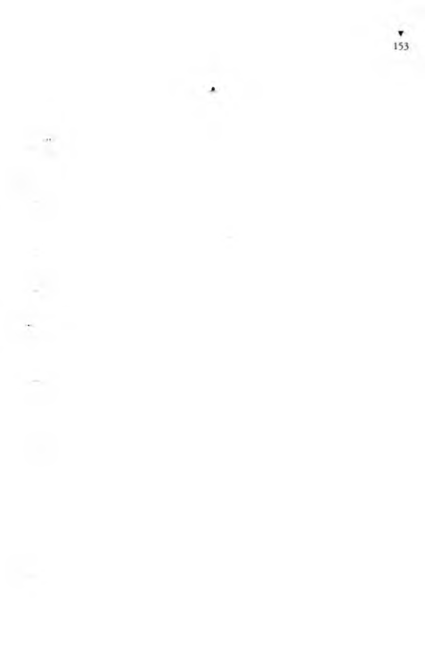

Nedenmiş o?
Yahu, zavallı yaşamıyor ki hastalansın.
koğuşta toplu bir kahkaha patladı.
Yaşar gülümseyerek,
( )yle söyleme ağbi, dedi, her ne kadar resmen yaşamıyorsam
• l.ı. benim de azbııçuk yaşadığım, yani yaşarmış gibi olduğum
l'.ııillerim olmadı değil.
Aman... Ne diyorsun? Gerçek mi yahu? Yaşadın demek?
Anlat hele şunu Yaşar...
kalın boru sesli olanı,
Bize şimdiye kadar hep yaşamadığını anlattın da... dedi.
Yaşar,
Neden öyle söylüyorsun ağbi, dedi, askere alınırken, ölmüş
lubamın devlete borcunu alırlarken, akıl hastanesine sokarlarken,
lu p yaşıyorsun diyorlar ya bana... Ama bikez azkalsın gerçekten
yaşıyordum.
- Ne diyorsun! Anlat be Yaşar şunu!
Anlatayım ağbiler...
Yarımporsiyon, ikinci kısmın hükümlülerini, ağıla tıkar gibi,
koğuşlarına soka soka birinci koğuşa yoklamaya gelmişti. Birinci
koğuştakiler de sayıldı.
11er akşam yoklamasından sonra olduğu gibi Yarımporsi-
yoi ı ,
- Allah kurtarsın arkadaşlar! dedi.
Hükümlüler, bir ağızdan, ama hepsi de yarım ağızla,
- Sağol! dediler.
Yarımporsiyon, ikinci kısmın bütün koğuşlarında sayım yap-
ııhtan sonra, ikinci kısmın demir çubuklu kapısını sürgüleyip
.likasından da kol demirini vurup gitti.
Yaşar Yaşamaz o günün sabahı viziteye çıkmış, cezaevinin he-
kimi, revire yatmasını söylemişti. Yaşar da revire yatmıştı. Ama
akşama doğru, cezaevi revirinin kirli aklığı içinde boğulur gibi
olmuştu. Hem de aldığı ilaçların etkisiyle kendini iyice duymuştu.
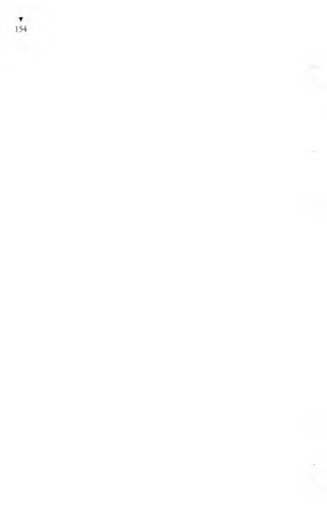
Koğuşuna dönmek istemişti. Koğuşa dönmek isteyişi, ne iyileşmeye yüz tutmuş olması, ne de revirin kirli aldığından sıkılmış olması yüzündendi. O, her akşam koğuş arkadaşlarına başından geçenlen
anlatmaya öyle alışmıştı ki, anlattıkça boşalıp öyle erinçleşiyordıı
ki, işte buyüzden akşama doğru revirde duramaz olmuştu. Yoksa
yine boğazı yanıyor, yine göğsü doluydu, öksürüyordu. Revirdeki,
cezaevindeki hükümlülerden biri olan sağlık memuruna, koğuşuna
gitmek istediğini söyledi. Yarın ilaç almak için yine revire gelecekli
Cezaevindekiler revirde yatmaya can atarlarken, Yaşar Yaşamaz'm
koğuşuna gitmek isteyişine sağlık memuru bişey demedi.
Yoklamadan sonra birinci koğuştaki hükümlüler, uzatmadan
yemeklerini yemişler, Yaşar'ın anlatmaya başlamasını bekliyor
lardı.
O akşam anlatacağı bölümün girişini önceden yapmış olan
Yaşar, dinleyenlerin ilgisini yeniden canlandırmak için,
- Nerde kalmıştık arkadaşlar? diye sordu.
Bikaç kişi birden atıldı:
- Otelde...
- Hani senin hemşeri, sana Anşe’nin mektubunu vermişi i
ya...
- Sen de mektubu okumuştun...
Yaşar, anlatısının kaldığı yerini sanki bilmiyormuş da, sözde
anımsamış gibi,
- Haa, evet... diye söze girişti.
Bir soluklanıp anlatmaya başladı:
- O kötü otel odasında hemşerim, o gün müzede ne yaptığımı,
müze müdürünü görüp göremediğimi sordu. Ben de gördüğümü,
adını Satı’ya çevirmiş olan bizim Satılmış alçağının kartını keıı
dişine verdiğimi, müdürün de, “Başüstüne, gösterelim efendim,"
deyip, yanıma müzenin bir memurunu katarak, beni müzenin
içinde, kolları kopmuş, burunları kırılmış, taştan yapılma insanlın
arasında dolaştırdığım anlattım. Ben anlatırken hemşerim kahka
halarla gülüyordu. Müzede başıma gelenler gülünmeyecek gibi de
ilişildi. Demek ben müzenin kapısında ille müdürü göreceğim
tliye aylarca, burunları kırık, kolları kopuk heykelleri görmek
u,in beklemişim. Üzüldüğümü gören hemşerim,
“Nedir, Anşe’nin mektubunda kötü bir haber mi var?” diye
•.ordu.
Ben de mektupta yazılanları anlattım.
Hemşerim, benim sağalmaz bir avanak olduğumu, bende kele
sürülecek bir gıdımlık akıl olsa, hemen Anşe’yi İstanbul’a getirtip,
kendisinin karısına yaptırdığı gibi, benim de Anşe’yi bir zengin
evinde hizmetçi olarak çalıştırmam gerektiğini söyledi.
“Çalışır kız, hem kendine bakar, hem sana bakar, hem de
kasaba yerinde ziyan olacağına, İstanbul’a gelir de dünya neymiş
görür...” dedi.
Birden tepem attı. Herife, “Ulan rezil, ben de senin gibi karı
parası mı yiyeceğim? Karı parasıyla kahvede akşama dek iskambil
kâğıdı mı oynayacağım?” diyeceğim ama, nasıl derim? Parası olmayanın yiğitliği hiç olmaz. Beni oteldeki odasından kovsa, sokaklarda aç kalacağım. Üstelik hemşerime borcum da var. Buyüzden hiç ses etmedim. Somurtmamdan içimden geçenleri anlamış olacak İd,
“İlle de Anşe’nin parasını elinden alman gerekmez ya... Kız
ı,alışır, kazanır kendine... Sen elini tez tutup Anşe’yi buraya
getirtmezsen, nah buraya yazıyorum işte, kızı elin zengin bir
yabanına verecekler,” dedi.
Orası öyle... Anşe elden gidecek. Hemşerimin dediklerine
aklım yatar gibi oldu. Öyle ya, parasını elinden almadıktan
sonra, Anşe’nin çalışmasında ne kötülük var!..
“Dediklerin iyi de, Anşe nerde çalışacak? İyi bir uygun ev
bulabilir miyiz?” diye sordum.
“Kolay o iş... Orasını sen bana bırak. Hizmetçi komisyoncuları
var, yarın sabah gider, konuşuruz,” dedi.
Komisyoncu lafına benim midem bulandı. Hemşerimin açıklamasına göre, Anşe’ye çalışacağı evi bulacak olan herif, Anşe’nin aylığından bir yüzde komisyon alacakmış.
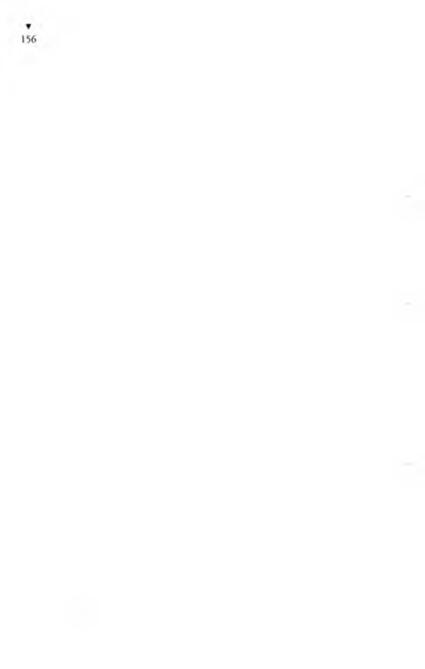
“Öyleyse, ben Anşe’nin İstanbul’da hizmetçi duracağı evi
önceden görmeliyim,” dedim.
“Helbetteee... Bura İstanbul. Helbet, evi bize komisyoncu
gösterir. Pazarlığı da kesişiriz. Ondan sonra Anşe’yi İstanbul’a
çağırırsın,” dedi.
Ertesi sabah hemşeri, beni aldı bir parka götürdü. Park,
belediyenin parkı. İçinde çocuk bahçesi var. Anneler, analıklar,
hizmetçiler, çocukları arabalara koymuş, parkta gezdirip dolan
diriyorlar. Büyücek çocuklar parkta oynuyor. O park hizmetçi
pazarıymış. Komisyoncularla hizmetçiler, hizmetçilerin kocaları
da orada, bir pazarlıktır gidiyor. İmanı nikâhlı üç dört karısı olup
hepsini hizmetçiliğe vermiş kocalar bile var. Bizim hemşeri artık
bu işlerin kurdu olmuş. Vardık bizim komisyoncunun yanına.
Tahta park sırasına oturup cıgaraları yaktık. Komisyoncu An
şe’nin yaşını, kilosunu, iş bilirliğini, neyini hep sordu. Herbişeyi
öğrendikten sonra,
“Tam ona göre bir ev var, çok namuslu bir hanımın köşkü...
Eski İstanbul hanımefendisi ki o kadar olur... Güher Hanım
derler. Boğaziçi’nde bilmeyen, tanımayan yoktur. Senin Anşe,
Güher Hanımefendinin köşkünde rahat eder, yer içer yaşar,” dedi.
Aylığında, komisyonunda, parasında da uyuştuk. Ordan otele
varınca ben Anşe’ye, “Hiç durma, teles, İstanbul’a gel, sana iş
buldum,” diye mektup yazdım. O da bana falanca günü geliyo
rum diye mektupla bildirdi. İyi mi? Anşe’nin geleceği gün geldi
çattı. O gece gözümü uyku tutmadı. Sabah erkenden Haydarpaşa
Garı’na gidip tiren yolunu gözlemeye başladım. Tiren akşama
doğru gelecek ama, ben sabahın köründe ordaydım. Bekle ha
bekle... Saatler yaklaştıkça yüreğim küt küt atıyor. Tirenin gelme
saati geldi geçti, tiren görünürde yok. Bir saat gecikmeli diye ilan
ettiler. Bir saat sonra, yarım saat daha gecikmeli olduğunu ilan
ettiler. Üç dört kez tirenin gecikmesini ilan edince, benim gibi
yolcusunu karşılamaya gelmişlerden biri, demiryolu idaresine
silme sıvama sövüp saydıktan sonra,
“Ulan, hiçbir tirenimiz hiçbir gün hiçbir yere saatinde gelip
I’,iımez de bu tarifeleri ne bok yemeye yaparlar?” diye bağırınca,
unlan yaşlıca, gözlüklü bir bey,
“Efendim, tarifeleri, tirenlerin ne kadar geç kaldığını anlamak
h, in yapıyorlar. Tarife olmasa, tirenin kaç saat geciktiğini nerden
bileceğiz?” dedi.
Derken kara tiren geldi. Ben tirenin pencerelerine koştum.
Anşe’yi göreceğim diye kendimi pencereden pencereye atıyorum.
Kalabalık ki anababa günü... Bir de Anşe’yi bulamazsam, kız
yolunu yitirir koca İstanbul’da, gidecek yeri de yok... Anşe’yi
bulacağım diye o yana koşuyorum, bu yana döneniyorum. O
sıra bir el omzumdan tuttu:
“Yaşar!”
Dönüp baksam ki, Anşe değil mi!
Kız beni bulmasa, ben oralarda daha dönenip duracağım. Yol-
> ularla karşılayıcılar sarılıyor, öpüşüyor. Bizde el içinde sarılışmak,
öpüşmek ayıp sayıldığından birbirimize bakıştık ama, işte öyle
bakıştık ki öpüşme kaç para eder yanında... Aıışe’me kavuşunca
dünyalar benim oldu. İki tahta bavuluyla bir de bohçasını kaptım
elinden. Tahta bavulundan birinin üstü boyalı teneke kaplı ve o
boyalı tenekenin üstünde çiçekler arasında kuş resimleri var, gelin
sandığına benzer bir bavul... Belli ki Anşe’m, bunca yıl düzdüğü
çeyizini de alıp kaçmış baba evinden.
“Hoşgelmişsin Anşe’m, seni çok özledim,” dedim.
“Hoşbuldum Yaşar’ım, ben de seni çok özledim, hem de nasıl
özleme...”
Ne diyeceğimi bilemediğimden, daha doğrusu Anşe’ye diyecek
bir sözüm, söz söyleyecek de yüzüm olmadığından, birden,
“Kız Anşe, sana öyle iyi bir iş buldum ki, hiç sorma... Yiyip
içip yatacaksın, öyle bir rahat iş... Çok iyi ve zengin bir hanımın
yanında,” diye başlayıp, hizmetçi komisyoncusundan neler duy-
ılıımsa onları Anşe’ye satmaya başladım:
“Güher Hanımefendi derler ki, Boğaziçi’nde onu tanıyıp
bilmeyen yoktur, bir eski İstanbul hanımefendisi olup onun
köşkünde bir hanım da sen olacaksın...”
“Ya sen ne yaptın Yaşar’ım, bir işe girmişsinclir herhal?.."
dedi.
“Giremedim, hiçbir iş bulamadım,” dedim.
“Ya o Satılmış’m kartı ne oldu, bişeye yaramadı mı?” dedi.
“O nun kartıyla bana bedavadan müzeyi gezdirdiler, hem ile
zorla gezdirdiler. Başka bir boka yaramadı,” dedim.
Anşe’yi o gece için bile bir otelde yatıracak param olmadığın
dan, gecenin bir zamanı, çalışacağı Güher Hanımefendinin evine
götürüp bıraktım. Güher Hanımefendinin köşkünü önceden
göstermişti komisyoncu, ama kadını görmemiştim. Köşkün
kapısını açan kadına, getireceğime söz verdiğim hizmetçiyi
getirdiğimi söyledim. Anşe’ye de sık sık geleceğimi söyledim,
Anşe, başını benden öteye çevirip, başındaki yazmasının ucuyla
gözlerini sildi ki, ağladığını bana belli etmesin. Döndüm geldim
geceyarısından sonra otele.
Artık hemşeriden borç isteyecek yüzüm de yok. Aç açına
sokaklarda gezmekte, kendime iş aramaktayım. O nun bunun
elindeki gazetelerin işçi arama ilanlarına bakıp, herkim işçi ararsa
koşup oraya başvuruyorum. Her nereye gittimse nüfuskâğıdı
istiyorlar. Caddelerde dolanıyorum. Bir mağazanın vitrininde
“çırak aranıyor” diye yazılı kâğıt görünce daldım içeri. Bir iş olsun
da varsın çıraklık olsun, uşaklık olsun, ne olursa olsun. Orda
da nüfuskâğıdı istediler. Odacı aranıyor, diye ilan yazılı yerlere
giriyorum. Oralardan da boynu bükük dönüyorum.
Sözde Anşe’yi İstanbul’a getirttim, yanımda olsun diye... Ama
gidip göremiyorum ki... Eskisinden çok özlemeye başladım
Anşe’yi. Çalıştığı Güher Hanımefendinin köşkü, Boğaziçi’nin
uzak biyerinde. Yol parası da çok tutuyor. Bir sabah erkenden
düştüm yollara, yayan yapıldak git ha git... Öğleden sonra Güher Hanımefendinin köşküne vardım ama, ölü gibiyim, hem
yorgunluktan, hem de açlıktan... Kapıyı çalıp Anşe’yi sormaya
viııeklenemediğimden köşkün dolayında döndüm durdum belki
Anşe’yi görürüm, biyerlerden sesini duyarım diye... Dolanırken
l>ıı de baktım, köşkün alt katında, önyüzü tüm camlı biyerde benim garip Anşe’m, yerinde bir saniye bile durmadan fır dönüyor.
Ne yaptığım bilmesen de uzaktan baksan, kız delirmiş dersin.
Anşe’nin olduğu yer, mutfak gibi, çamaşırlık gibi, yemek salonu
gibi, her işe elverişli büyük biyer. Anşe, kılığını değiştirmiş, has
f.ıanbul kızı olmuş çıkmış. Şalvarı atıp entari giyinmiş. Zavallının dünyayı gözü gördüğü yok, o yerde, bir o yana, bir bu yana koşup dönüp duruyor. Bu koşuşmasının nedenini merak edip,
b.ışımı cama dayayarak seyre daldım. Anşe, mutfak ocağının
ıı/erindeki elektrikli ızgaranın düğmesini çevirirken düdüklü
ıcncere tıslamaya başladı. Anşe, düdüklü tencerenin kelebeğini
gevşetirken, bu kez de, adının mikser olduğunu sonradan öğ-
leııdiğim zımbırtı durdu. Anşe koşup karıştırıcıyı yeniden işletti.
I )cıicen ocağın üzerindeki ızgaradan dumanlar çıkmaz mı! Anşe
ızgaraya seyirtip kızaran ekmekleri alırken bir zil sesi başladı.
I defonmuş. Kız koştu telefona. Ulan şu benim Anşe’ye bak sen,
ıdetonda konuşmasını da öğrenmiş, alo demesini de öğrenmiş,
mersi efendim demesini de öğrenmiş. Telefonu kapamasıyla,
ılınan çamaşır makinesine koşup düğmesini çevirerek yeniden
ı,.ılıştırdı. Derken bir çıngırak daha... Çalar saat çalıyor ki, fabrika
ı, mgırağı sanırsın. Anşe, saatin çıngırağını duyunca, koştu çıngırağı durdurdu ilkin, sonra gene çalışan bir makineyi durdurdu, lıer ne makinesiyse... Yahu kızın soluklanmaya bir saniyesi yok,
kendini o makineden bu makineye, elektrikli ızgaradan telefona,
ıdefondan çamaşır makinesine, çamaşır makinesinden karıştırıcı
makineye, ordan çalar saate, ordan düdüklü tencereye, ordan
elektrik düğmesine, ordan elektrik süpürgesine, ordan havagazı
lırmına... fır dönüp duruyor. Makineden makineye koşuşup
durmaktan, sanki kendisi de bir makine olup çıkmış. Zavallı kız
çırpınıp duruyor. Bu koşuşmaya, bu fır dönenip durmaya insan
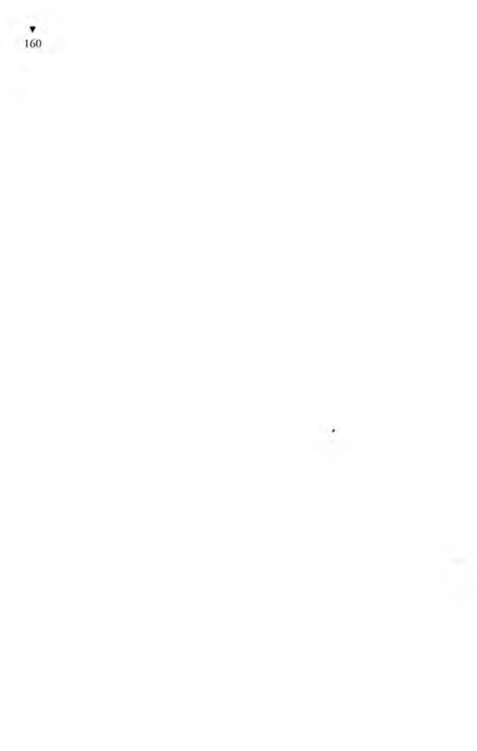
dayanmaz. İnsanı bırak, makine olsa dayanmaz buna. Aıışe’min
o koşuşmasını görünce ağlayasım geldi. Bunca zor işleri de ne
zaman, kimden öğrenmiş benim hamarat Anşe’m; şaştım kaldım.
O koşuşup dururken, olduğum yerde benim başım döndü,
gözlerim karardı. Kendimi biraz toparlayıp başımı dayayarak
içerisini seyrettiğim camı elimle tıklattım. Makinelerin, ocakların,
zillerin, çıngırakların, düdüklerin sesinden Anşe’nin, benim camı
tıklatmamı duyacağı yok. Daha hızlı hızlı vurdum cama. Anşe
dönüp baktı, bakmasıyla,
“Yaşar!” diye bağırarak, biyandan da sabunlu ellerini önlüğüne
silip kurulayarak camlı kapıdan çıkıp yanıma geldi.
“Gir, gir içeri!” dedi.
“Evdekiler darılmazlar mı?” diye sordum.
Evin insanları akşam gelirlermiş. Evde bir Güher Hanımefendi
varmış. O da yatalakmış, yerinden kalkamaz, hep uyuklarmış.
Anşe’mle bir tadıyla öpüşmeye bile fırsat olmuyor, kızın o
yana, bu yana koşuşmasından.
“Durdur şu zırıltıları, vidaları, düğmeleri, makineleri neyi de,
tadıyla iki söz edelim...” dedim.
“Amanın... Yemekler yetişecek hep, işler görülecek hep... Sen
konuş, ben seni dinlerim, kulağım sende...” dedi.
Ulan, göz işte, kulak oynaşla olur mu hiç... Burası nasıl biyer,
vapurların makine dairesi gibi. Gürültü patırtı da çok. Duysun
diye bağırarak konuşuyorum. Hani laf olsun diye,
“Nasıl, memnun musun burdan? Memnun değilsen, komis
yoncuya söyleyeyim de sana başka biyer bulsun...” dedim.
“Çok iyi biyer. Buraya kapılandığıma çok memnunum. Çok
rahatım burda. Seni düşünmekten başkaca hiçbir derdim yok..."
dedi.
Sonra boynunu büktü. Baktım, gözleri buğulanmış.
“Yaşar!”
“Buyur!”
“Sana bişey diyeceğim.”
"Bir deme, beş de canım...”
“Duyduğuma göre babam benim izimi öğrenmiş. Ardıma
adam koymuş. Beni burdan zorla aldırtıp götürecekmiş. Şu
nikâh işi için elini çabuk tut...”
Ne diyebilirim ki...
“Helbeeeet... Ben başka neye uğraşıyorum ki... İlkin kendime
bir iş bulayım hele. Ondan sonra da nüfuskâğıdımı çıkarmaya
çalışacağım. Nüfuskâğıdımı da çıkardım mı, doğru nikâh memurunun karşısına...”
Anşe, bir eli havagazı ocağının düğmesinde, öbür eliyle elimi
tutup,
“İş bulmasan da olur, paran olmasa da olur... İşte ben çalışıyorum ya, ikimize de yeter bu para... Senden tek istediğim bir nikâh, nikâh kıydır, yeter bana...” dedi.
Ağzımdan bir ses çıksa, kendimi tutamayıp çocuk gibi ağlayacağım ve Anşe’ye rezil olacağım. Sustum kaldım.
Pişen yemeklerden güzel kokulu buğular tüttükçe açlıktan
barsaklarım guruldamaya başladı. Dündenberi ağzıma lokma
koymadığımı anladı mı nedir,
“Sana yemek koyayım da yi!” dedi.
“Yooo, istemem... Buraya gelirken, az önce tıka basa karnımı
doyurmuştum,” diye yalan söyledim.
Anşe’nin durumu içime dokunduğundan, orda daha duramadım.
“Gene gelirim Anşe’m, sana iyi haberler getiririm...” diyerek
ayrıldım.
Yanma ikinci, üçüncü gidişimde, bana bir de para vermeye
kalkışmadı mı! Aldığı aylığını biriktiriyormuş. Hiçbir gereksemesi
olmadığından parasını hiç harcamıyormuş.
“Ben parayı neyleyeceğim, al sende dursun...” diyor.
Almadım. Alır mıyım hiç canım...
Anşe, Güher Hanımefendinin köşkünde çalışmaya başlayalı
altı ayı geçmişti. O benim odasında kaldığım hemşerim bana
surat asmaya başladı. Anladığıma göre, Anşe’den para alıp kendisine olan borcumu ödemeyişime içerliyor. Hemşeriye de bunca zamandır iyice ağırlık oldum. O ucuz otelde kalmak için bile para
kazanamıyorum. Havalar da sıcak olduğundan sokaklarda yatmaya
karar verdim. İşte bu kararı verdiğim gündü, otelin alt katındaki
kahvede oturuyordum. Artık nasıl acılı derinlere dalıp gitmişim
ki, o otelde tanıştığımız bir adam, elini omzuma koyup,
“Yahu, demindenberi sesleniyorum da duymuyorsun... Nedir
o arkadaş, kara kara düşünmektesin. Karadeniz'de gemilerin mi
battı?” diyerek benimle şakalaştı.
“Vara gemilerim olaydı da hataydı... Daha da kötü arkadaş!”
diye söze başlayıp nüfuskâğıdım olmadığından hiçbir işe almadıklarını yana yakıla başından sonuna anlatıp içimi döktüm.
Bunun üzerine o adam,
“Sen, namuslu, vicdanlı bir delikanlıya benzersin, sana bir
ağabeylik, bir iyilik yapayım da yaşadıkça yat kalk, bana dua
et!..” dedi.
“Aman nedir... Beni kurtar, kulun kölen olayım,” dedim.
“Seninle ortak bir iş kuracağız, tonla para kazanacağız,”
dedi.
“Nasıl bir iş kuracağız?” diye sordum.
“İyi biyerde, çok işlek biyerde seninle bir manav dükkânı
açacağız. Önce bir dükkân kiralayacağız. Sonra öyle bir manav
donatacağız ki, görsün millet... Bu iş benim işim, ben ustasıyım
bu zenaatın. Nasıl bilir misin, ben var ya ben, manav dükkânında
sepete kaldırım taşı koyarım, Allah seni inandırsın, kavun-karpuz
diye satarım. Çakılı küfeye doldurur, turfanda caneriği diye satarım. Bu zenaatta ustalık, mostra çıkarmak bir, tatlı dil iki, malı süsleyip düzgünlemek üç... Üstüme yoktur. Tohuma kaçmış hıyarı
körpe badem diye satarım ki, görsen şaşarsın. Yapalım seninle
bu işi, tonla para kazanacağız. Başka bişey istediğim yok senden,
yeter ki, bu iyiliğime karşılık, sen de bana dua et...”
“İyi ama ağbicim,” dedim, “söyledim sana, benim nüfuskâ-
ğıdım yok ki...”
“Varsın olmasın, senin nüfuskâğıdın yoksa, benim var ya...
Dükkânın kontratını benim üzerime yaparız, ruhsatı da benim
üzerime çıkarırız, olur biter. Ben paralara elimi bile sürmem.
Paralar sende dursun. Akşamdan akşama hesap görürüz. Paralar
hep sende durur...” dedi.
Paralar bende duracağına göre bana kazık atamaz diye dü
şündüm.
“Yalnız biraz sermaye ister,” dedi.
Aptallaşıp,
“Ne dedin? Sermaye mi?” diye sordum.
“Çok değil, sen yalnız üçbin lira sermaye koy yeter. Başkasının
otuzbin liraya yapamadığı işi yapacağız evelallah... Hepsi hepsi
üçbin lira... Bu zamanda üçbin lira ne ki... Göreceksin ya, manav
dükkânım açtık mı, para makinesi kurmuş gibi para keseceğiz
durduğumuz yerde. Sen dükkânda kasanın başında dur, boyuna
para say... Geri kalan bütün işler benim...”
Yanına her gidişimde Anşe bana para vermeye kalkıyor ya,
aklıma o geldi. İş kurayım diye, sermaye yapayım diye ille de bana
para verecek. Almıyordum. Ama bu kez başka. Bu kez sağlam
kazançlı bir iş kuracağız. İş bilir bir ortağım olacak. Anşe’den
aldığım parayı, para kazanınca, çoğaltarak geri veririm.
“Diyelim, ben birisinden borç aldım bu üçbin lirayı, nice
zamanda borcumuzu ödeyebiliriz?” diye sordum.
Hem de “borcum” demiyorum, “borcumuz” diyerek onu da
borca katıyorum ki, ortak olduğumuzdan borcu ödemeye o da
çaba göstersin.
“Hele bir dükkânımızı açalım, üçbin lira da para mı, bir
haftada öderiz istersek...” dedi.
“Ondan sonra, nüfuskâğıdımı da çıkarabilir miyim?” diye
sordum.
“Para olunca yapılmayacak ne var, istersen üç nüfuskâğıdı
birden çıkartırsın...” dedi.
Ben bu sözler üzerine iyice coşup coşkulandım, say ki kuş olup
uçtum, de ki yel olup estim, eskiden altı saatte vardığım Güher
Hanımefendinin köşküne gene yayan yapıldak iki saatte gittim.
Benim Anşe’m gene köşkün o alt katındaki camlı yerinde tencerelerin, çamaşır makinesinin, ütünün, düdüklünün, şunun bunun arasında dönenip koşuşup duruyor. Ocaklardan, tencerelerden,
kazanlardan, çamaşır makinesinden, ütüden, şundan bundan
buğular, dumanlar tütüp durmakta, benim Anşe m dumanların,
buğuların arasında gidip gelmekte. Beni görmesiyle,
“Ay aman, bugün yüzün aydın, gözlerin gülüyor, yoksa bana
bir müjden mi var?” diyerek boynuma atıldı.
“Müjdem var ki, nasıl bir müjde Anşe’m, olursa buncası olsun... Bir kazançlı iş kuracağız iş bilir biriyle ortak olaraktan...”
diye başlayıp, benim ortak bana her neler anlattıysa, ben de onları
Anşe’ye hiç eksiksiz ilettim:
“Ben kasanın başında duracağım, paralar hep elimde olacak...
Ortak paraya hiç karışmayacak. Yalnız o çalışacak... Öyle usta bir
manav ki Anşe, bildiğin gibi değil. Sokaktan taşı çakılı toplar,
süsler püsler, sepete dizer, yaprakların üstüne koyar, alıcısına göre,
kimisine çilek diye, kimisine kaysı diye satarmış, öyle bir usta
satıcı... Tonla para kazanacağız... Yalnız...”
“Yılnız,” deyip de boynumu bükerek, başımı da eğerek ben
susunca, Anşe merakla,
“Yalnız? Yalnız ne olmuş?” diye sordu.
Ben başımı yerden kaldırmadan,
“Yalnız bu iş biraz sermaye istiyor ki, işlek biyerde dükkân
kiralayalım,” dedim.
Anşe sözümü ikiletmeden koşarak gitti, az sonra soluk soluğa
gelip,
“Al işte...” diyerek eteğindeki paraları önüme döktü. Saydım,
dörtbinbeşyüz lira...
“Bu parayı bir haftada, bilemedin oııbeş günde sana geri
vereceğim,” dedim.
Anşe,
“Geri ver, verme... Ama şu nikâhı telesip kıyalım aman Ya-
şar’ım... Yoksa babam beni burçla bulursa zorla alır götürür...”
dedi.
“Sen hiç tasalanma, herbişeyin sırası var. İlkin dükkânı açıp
paraları kazanalım, ondan sonra nüfuskâğıdımı da çıkaralım,
nikâh kolay...” dedim.
Haber güvercini desen, benimcesine telesip gelemez. Döndüm
ortağımın yanına, paralardan üçbinini avucuna saydım. Üstünü yedek olarak sakladım. İyi ki de saklamışım, çünkü dükkân açmak, kontrat yapmak, ruhsat almak kolay değil. Rüşveti var,
bağışı var, harcı var, haracı var, susu var, busu var, çeri var çöpü
var, estekti köstekti, yan yattı çamura battı derken, bendeki
paralar kuruşu kalmamasıya uçup gitti. Paralar gitti ama, biz de
işleri yoluna koyar gibi olduk.
Ortağım bana,
“Yaşar kardeşim,” dedi, “sermayeyi sen koydun, işi kurup yürütmek de benden. Dükkânı kiraladık, ruhsatı da aldık belediyeden. Şimdi sıra geldi seninle ortaklık sözleşmesi yapmamıza...”
Ben de ona,
“Benim sözüm sözdür, bizde söz namustur. Sana güvenir,
sözüne inanırım. Ayrıca sözleşme hiç gerekmez...” dedim.
Benim böyle dememin nedeni, sözleşme yapmaya bile paramın
kalmamasından... Siz adamdaki namusa bakın ağbiler,
“Yoo, olmaaaz... Ölüm var, kalım var. Bu ölümlü dünyada
neme gerek, ben kimsenin hakkı üstümde kalsın istemem. Sözleşme yapmayınca ben bu işe giremem!” diye tutturdu.
Eh, değil mi ki istiyor, peki sözleşme de yapalım ama, para
yok. Gittim bir daha benim Anşe’ye, durumlar böyleyken böyle
deyip biraz daha para alıp döndüm. Ortakla gittik bir dilekçeciye,
bize çok sağlam bir ortaklık sözleşmesi yazmasını istedik. Dilek
çeci de çok iyi bir dilekçeciymiş ki, kaleminden kan damlayan
yazıcılardan. Dilekçecinin makinesinde yazdığı sözleşme, bugün
bile aklımdadır:
“Bir taraftan Yaşar ile, diğer taraftan Salim Tertemiz arasında
akdedilen işbu ortaklık mukavelesine göre dükkân kontratı ve
açılış ruhsatı Salim Tertemiz adına yapılarak.... falan filan ......
hasıl olacak kâr ortaklar beyninde yarı yarıya hesap edilerek
falan filan .... bu veçhile tespit edilmiş o lu p ...... falan filan ......
işbu mukavele aramızda iki nüsha olarak tanzim kılınarak falan
filan...”
Bu yazılı sözleşmeyi ikimiz de imzaladık. Birini ortağım aldı,
birini ben cebime koydum. “Hayırlı olsun” diyerek birbirimizle
el sıkıştık. Hemen de işe başladık. Yemişleri, zerzevatı dükkâna
yığdık doldurduk. Benim ortak kendini, olduğundan çok daha
az demiş bana, nice övsem gene az, öyle bir iş bilir adam. Dediği
gibi, mal satmaya yetişemiyoruz, dükkâna mal yığmaya yetişemiyoruz. Ortağımın dediği gibi tonla para kazanıyoruz. Akşam olup da kepengi indirip kasanın başına oturduk mu, kasa silme
para dolu, say Allah say... Para sayması da öyle bir güzel oluyor
ki... O rtağım ın ellerine sarılıp sarılıp öpüyorum . İçimden,
“Hay Yaşar Yaşamaz oğlum, talihin döndü artık, bundan sonra
yaşamazlığın kalmadı, hep Yaşar Yaşar olacaksın...” deyip kendi
kendime gülüyorum. Ortağıma, ellerini öpüp,
“Hay Allah senden razı olsun...” dedikçe, o da bana,
“Hiç önemi yok, sözünü etmeye değmez. Benimkisi bir iyilik.
Sen beni ölene dek unutmayacaksın...” diyor.
Böyle bir iyilik yapan adam hiç unutulur mu!
Dükkânı açışımızın haftası oldu. Akşam geç zaman dükkânı
kapadık. Paralar kasadan taşıyor. Biriken paraları sayıp da aramızda yarı yarıya bölüşeceğiz.
Ortağım bana,
“Yaşar kardeş, istersen işimizi daha büyütelim. İşimizi büyütmek için de ana paramıza hiç dokunmadıktan başka, kazandığımız paralara da dokunmayalım. Kazancımızı biriktirerek sermayemizi artıralım,” dedi.
İyi akıl! Çok doğru söylüyor. Biz kazandığımız paraya hiç
dokunmuyoruz; yalnız içinden kıtı kıtına yiyip içmekteyiz.
Ayakkabımın tabanı delinmiş, aman sermayemiz biriksin diye
ayağıma ucuzundan bir lastik eledik bile almıyorum. Arasıra
Anşe çalıştığı köşkten izinli çıkıp dükkâna geliyor, bize, “Pazar
ola!” diyor, işimizin yürüdüğünü, bol para kazandığımızı görüp
seviniyor. Yalnız aradabir,
“Aman Yaşarım, nikâh işi uzamasın, babam ardıma adamlarını
koymuş, heryerde beni aratıyor,” diyor.
Ben de ona,
“Görüyorsun işte, yüzdük yüzdük kuyruğuna geldik. Az bişey
daha sık dişini. Dükkânı açalı şunun şurasında daha dört beş
ay ancak oldu. Sermayemizi artıracağımızdan para çekmiyoruz.
Kendime giysi, göynek ney bile almadım,” diyorum.
Anşe yumuşak başlı olduğundan ses etmiyor.
İşler böylece güzel güzel yürüyüp giderken, her sabahki gibi o
sabah da erkenden dükkânımıza gelip, açarı kilide sokup açtım.
“Ya Allah ya bismillah... Dükkân kapısı hak kapısı...” diyerek
kepengi kaldırdım ki, aman Allah, ne görsem iyi, görecek hiçbişey
yok, dükkânın içi tamtakır... Bizim dükkân, bir soğan başı, bitek
pırasa sapı kalmamasıya hep boşaltılmış.
“Amanın komşular, yetişin! Dükkânımıza hırsız girmiş! Koşun,
yetişin!” diyerek bağırmaya başladım. Bağırtımı, çığlığımı duyan
komşular başıma üşüştü.
Komşumuz kasap,
“Yahu, boşu boşuna bağırıp herkesi ne diye ayağa kaldırıyorsun. Dükkânınıza hırsız filan girmedi...” dedi.
“Girmedi de ya ne oldu! Boşalmış herbişey işte...” dedim.
Dükkânımızın bitişiğindeki kahveci söze atılıp,
“Erkenden, daha karanlıkta senin ortağın geldi, malları iki
arabaya doldurup götürdü,” dedi.
Gene komşularımızdan olan berber de,
“Ben sordum, başka biyerde manav dükkânı açtığını söyledi,”
dedi.
Ben bu şaşkınlık içindeyken postacı geldi.
“Salim Tertemiz burda mı?” diye benim orrağımı sordu.
“Yok, buradan gitmiş...” dedim.
Bu kez de postacı, elinde tuttuğu uzun zarfın üstünü ııluı
yarak,
“Peki, Yaşar Yaşamaz nerde?” diye sordu.
“Benim! Ben onun ortağıyım,” dedim.
Postacı,
“İyi öyleyse, imzala şurayı!” diyerek elinde tuttuğu taalılıilılil
mektup defterini ve taahhüt makbuzunu ayrı ayrı bana im7.al.11
tıktan sonra, o büyük zarfı bana verip gitti.
Zarfın üstünde basılı yazılar var, belli ki resmi biyerden gel iyi 1
Bir sevindim ki, hiç sormayın ağbiler. Öyle ya, bir resmi yerilen
benim adıma mektup geliyorsa bu ne demek? Resmi yerler ılı*
yaşadığıma artık inandılar demek... Komşulardan bilene aııl.ı
yana okuttum resmi zarfın İçindekini. Bana vergi dairesinden
geliyormuş bu yazı. Bizim dükkânın ikibin şu kadar lira vergi
borcu varmış. Onbeş gün içinde ödenecekmiş.
Ç ıt çıkarmadan Yaşar Yaşamaz’ 1 dinlemekte olan birimi
koğuşun hükümlüleri, anlatının burasında, sanki kendilerine
komut verilmiş gibi, hep birden,
- Haydaaa!.. diye bağırarak şaştıklarını belirttiler.
Koğuşun en yaşlısı olan,
- Yaşar oğlum, sakın ödemeseydiıı vergiyi mergiyi... dedi.
Bir genç de,
- Enayi mi, neden ödesin, dedi, yaşamayan adam hiç vergi
öder mi?
Boru sesli olanı,
- Dükkânın kontratı da, ruhsatı da kendi üstüne değil ki vergi
ödesin, elbet borç da dükkânı soyan ortağının... dedi.
Yaşar Yaşamaz,
- Ödemeyecektim ama, olmuyor ki... dedi.
- Neden olmuyormuş? diye sordular.
Yaşar anlattı:
- Vergiyi ödemezsem, dükkân elimden gidecek... Oysa ben,
ortak dükkânı soyup kaçınca, kendi başıma manavlık yapmayı
■
lu/Oin li'ıın. İşi öğrenmiştim. Anşe’den biraz daha sermaye alıp işi
m. hin i ektim. Buyüzden vergiyi ödemem gerekiyor ki, dükkânı
■
I ı İşleteyim. Başta, vergiyi ortağın ödemesi gerektiğini söyledim
. . ı|‘i d.ıiıesine gidip. Ama ortada ortaklık sözleşmesi var. Ben
ıı ıd.ı bilmeden bir de benim ortağa kefil olmuşum. Vergi dairesi
I ■
Iillerden, ortaklardan kimi yakalarsa, vergiyi ondan alırmış. Tek
I., ni resmi makamlar yaşıyor diye tanısınlar da, varsın vergiyi
.I. alsınlar. Elimde vergiyi ödediğimi gösterir makbuz olunca,
ı ış.ıılığımı da ispat etmiş olacağım.
Boru sesli hükümlü,
Ortağını mahkemeye verseydin ya... dedi.
Yaşar,
Vermez olur muyum ağbicim, elbet verdim, dedi, yaptığımı/ sözleşmeye dayanarak ortağı mahkemeye verdim. Ortak, mahkemeye geldi. Yargıca,
"O dükkân benimdir. Nah işte bakın, kontratı da, ruhsatı da
Iıcııiın üstümedir,” dedi.
() zaman ben de, yargıca ortaklık senedimizi uzatıp,
“Ya bu ortaklık senedine ne diyor? Biz onunla ortakken,
haberim olmadan dükkânımızı soyunuştur...” dedim.
Bunun üzerine benim o namussuz ortak,
“Bu adam önce kim olduğunu ispatlasın, kimliğini ortaya
koysun, ondan sonra konuşsun. Bu bir sahtekârdır. Çanakkale’de şehit olmuş bir zavallının, bir mübarek şehidimizin sahte olarak adını kullanıyor. Ben bunu ispata hazırım,” deyince, ben
korkudan titremeye başladım.
Öyle ya, h erif biraz daha ileriye gitse, ..... oğlu Yaşar’ın
Çanakkale’de şehit düştüğünü resmi defterlerden çıkartıp gösterecek; benim de bir şehidin kimliğini kullandığımı ortaya koyacak.
Bakın işe ağbiler, ben kendi kendimin sahtekârı olacağım. Bunun
üzerine mahkemede artık sesimi çıkaramaz oldum. İster istemez
davayı kaybettim.
Yaşlı hükümlü,
- Oğlum Yaşar, hiç olmazsa vergiyi ödemeseydin... dedi.
Yaşar,
- Emice, dedi, ödemeyecektim. Vergi dairesine gittim, siz be
nim yaşadığımı ispat edin, ben de bu vergiyi ödeyeyim, dedim.
Öyle değil mi, ölmüş adam vergi öder mi? Bunun üzerine vergi
dairesindeki memur, yıvış yıvış sırıtaraktan,
“Bu ortaklık senedindeki imza senin değil mi? Yaşamıyorsun
da, ya bu ortaklık senedi ne? Ne zamandanberi ölüler dirilerin
ortağı olup bir de sözleşme imzalamaya başladılar?..” deyince,
ordaki memurlar da, yurttaşlar da kahkahayı bastılar.
Ben de güldüm. Çünkü memur haklı... Sonunda vergiyi ödedim. Anşeden biraz daha para alıp, manav dükkânımı tek başıma işletmeye başlamıştım ki, bu kez de, dükkânın sahibi,
“Bu adam kimdir? Benim bununla kontratım yoktur. Dük
kânımı fuzulen işgal etmektedir...” diye dava açıp beni polislerle
dükkânından çıkarttı.
Koğuştakiler şaşkınlıktan bir,
- Haydaaa!.. daha çekip ağızları açık kaldı.
Askıyla çay bardaklarını getiren delikanlı,
- Demek şimdi sen bu kırk milyon insanın arasında yoksun?
dedi.
Yaşar,
- Vergiyi ödetirlerken varım ama, dükkân açacakken yokum...
dedi.
Boru sesli adam,
- Ah be Yaşar, dedi, neden Karakaplı Nizami Beye gitmezsin?
Ona başvursaydın, senin her bir zor işini kolaylaştırır, yoluna
koyardı.
Koğuşun en yaşlı hükümlüsü,
- Allahıma bin şükür, bu memleketin hiç olmazsa Karakaplı
Nizami Beyi var, o da olmasaymış, işimiz hepten bitikmiş... dedi.
Çay ocakçısı bu sözü onayladı:
- Doğrudur. Karakaplı Nizami Bey de olmasaydı, işte o zaman
ört ki ölem. Hep bitmiştik... dedi.
( löster Kimliğini, Al Şapkanı
V.işar Yaşamaz’ın koğuşunda çok hünerli hükümlüler vardı.
V.ışar’ın yatak komşusu olan bir delikanlı, eline geçirdiği her
I ı■/, tenekesinden, yağ tenekesinden, hertürlü teneke kutulardın, hatta küçük konserve kutularından bile ocaklar, mangallar, maltızlar yapıp satıyordu. Buyüzden ona Maltızcı derlerdi. Ce-
/.ıc vindeki ocakların, maltızların, mangalların pek çoğu onun
dinden çıkmıştı.
Yaşar’ın ranzasının solundaki ranzada, altlı üstlü yataklarda
başka hünerleri olan iki hükümlü vardı. Gerçekte o ranzanın üst
yalağındaki çok hünerliydi. Ekmek içinden heykeller, biblolar,
madalyonlar, büstler yapardı. Buyüzden ona da Heykelci derlerdi.
I leykelci, kendisine ekmek içi hazırlamak için garibanlardan
birini ranzasının altına almıştı.
I ieykelci, günlük tayınını yiyemeyenlerden ekmeklerini ucuza
salın alır, işçi olarak çalıştırdığı adamına verirdi. Heykel yapılacak
ekmek içinin uzun zaman ağızda çiğnenmesi gerekirdi. İşte, Hey-
lu'lci’nin adamının görevi, ekmek içlerini ağzına alıp çiğnemekti.
I kmek içlerini ağzında çiğneyc çiğneye hamur yapardı. Yaptığı
ekmek hamurlarını biriktirir, Heykelciye verirdi. Ekmek içini
ağzında çiğneyip hamur yaptığı için ona Hamurkâr denirdi.
1 lamurkâr’ın çeneleri çok kuvvetliydi. Çünkü yemek zamanları
dışında, sabah uyandığından gece uyuyana dek, hiç durmadan
ağzında ekmek çiğneyip hamur yapardı. Hatta geceleri Yaşar
Yaşamaz, özyaşamını anlatırken bile. Hamurkâr hem onu dinler,
hem ağzındaki ekmekleri çiğnerdi. Ağzında ekmekle uyuduğu
bile oluyordu.
Heykelci kendine göre ham urlara bir ölçü koymuştu; o
ölçüde çiğnenmiş ekmekten yapılma hamuru beş kuruşa satın
alıyordu. Hamurkâr bütün gün ekmek çiğner, ancak günde bir
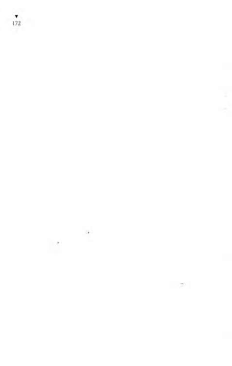
lira kazanabilirdi. Çünkü Heykelci, ağızda iyice çiğnenmemiş
ekmek ham urunu satın almazdı. Ağzında çiğnedikten sonra,
çiğnenmiş ekmek hamurunu sonradan elleriyle de yoğurması
gerekiyordu. Böylece hamur iyice özlenip heykel yapılacak kıvama
geliyordu.
Maltızcı, koridorda yeni yaptığı mangalları, maltızları satıyor
du. Hamurkâr da onun yanma oturmuş, hiç durmadan ağzındaki
ekmekleri çiğniyordu. İyice çiğneyip özlendirdiği ekmek hamıı
runu ağzından çıkarınca, önündeki artık ekmeklerden bir koca
tutam alıp ağzına tıkıyordu. O sırada Heykelci de, çiğnenmiş
ekmek hamurundan iki karış boyunda bir çıplak kız vücudu
yapmaktaydı.
Yanan ocaklarda, mangallarda, maltızlarda akşam yemekler i
pişirilmekteydi. Heykelci’nin yanında, ocağında yemek pişiren bir
hükümlü, kaynayan tenceresinin kapağını açmış, tadına bakmak
için buğular tüten tencereden aldığı bir kaşık yemeği soğutmak
için, büzük dudaklarıyla üflüyordu.
Bütün bu işleri yaparken, biyandan da gevezeliklerini sürdü
rüyorlardı.
Elindeki bir mukavva parçasıyla maltızını yellemekte olan biı
hükümlü, Heykelci ye,
- Yaşar ın işi olmuş mu? diye sordu.
Heykelci gözlerini işinden ve parmaklarını ekmek hamu
rundan yapmakta olduğu çıplak kız vücudunun kalçalarından
kaldırmadan,
- Valla bilmem, dedi, işi olsa da atelyede çalıştıısalar sanki kaş
para verecekler. Ben ona iyilik etmek istedim. Gel Yışar kardeşim,
sana günde bir buçuk papel vereyim, bana ekmek çiğne dedim.
Ama yapmadı.
Maltızlarını yelleyenler, pişirdikleri yemeklerin tadına bakanlar,
Hamurkâr, Heykelci, Dilekçeci, Maltızcı, hepsi bu sözle ilgilen
diler. İşlerini bırakıp İdareci’ye sordular:
- Neymiş, neymiş?
- Neden almıyorlarmış?
- İşliğe almıyorlar mı?
*
idareci açıkladı:
- İşliklerden birinde çalışmak için dilekçe vermişti ya... Müdür
Bey de dilekçeye “olur”u bastı...
- Eec? Müdür olur dedikten sonra, nasıl olmazmış?
İdareci, tadını çıkara çıkara anlatmak için, bildiklerini azar
azar söylüyordu:
- İnfaz savcısı da imzaladı olur diye...
Koğuşun yaşlısı,
- Lafın belini getirme de söyle ulan şunu. Yaşar’ı kim işe
ılmıyormuş, diye sordu.
İdareci,
- Yaşar’ın dilekçesini Cenabı Mevlam parafe etse, yine de
onu işe alamazlar... Nasıl alsınlar yahu, herifin nüfuskâğıdı yok
be... İşte çalışınca haftadan haftaya gündeliklerini almayacak mı?
Y.ini bordroya girmeyecek mi? Nüfuskâğıdı olmayan adamı, nasıl
soksunlar bordroya da gündeliklerini ödesinler! Bir müfettiş gelir
ile bordrolara bakar da, kendisi olmayan nüfuskâğıtsız birinin
bordroda gösterilip para çıktığını anlarsa, ne olacak o zaman...
S.ıvcı Bey de, M üdür Bey de, Başgardiyan da, çok istediler
Yaşar’ı işe almayı; ama Kâtip Bey bunları söyleyince kimse bişey
yapamadı artık...
Bu haberden büyük şaşkınlığa uğrayan koridordaki hükümlüler, hep bir ağızdan,
- Ilaydaaaaa! diye şaşkınlıklarını belirttiler.
Hamurkâr da dayanamayıp onlarla birlikte “HaydaaaaaL’ya
kaıildiği için, Heykelci ensesine şaplağı indirip,
- Sen işine bak ulan, ağzını açma, dedi.
Yarımporsiyon biyandan düdüğünü öttürüp biyandan da,
- İçeriii! Içeriiii! diye bağırarak koridora girdi.
Bu Yarımporsiyon, hükümlülere, “İçeri!” diye bağırırken,
görevini yapmaktan çok öte bir mutluluk duyuyordu. Düdük
öttürürken yada içeri diye bağırırken, ayaklarının ucunda yükselerek kısa boyunu uzatmaya çalışması, eğri büğrü gövdesini kabartması, şişinmesi, biçimi bozuk kafasını yana eğip de çalkalanması, uzun boylu hükümlülere bile yukarıdan bakmaya çalışması, onu
mutlandırıyordu. Onca hükümlüyü, düdük öttürüp, içeri diye
bağırıp koğuşlara tıkıyordu; onun için bundan daha büyük nasıl
bir mutluluk olabilirdi!
Yaşar Yaşamaz koridora en son girdi. Yarımporsiyon’un yanından gölge gibi süzülüp koğuşuna daldı, yatağına oturdu.
Koğuştakiler onu görmüşler, ama Yaşar’m üzüntüsünü görüp
hiçbiri işe neden alınmadığını sormamıştı.
Hükümlüler akşam yemeklerini yemişlerdi. Koğuşa o saatlerin
sinirli sessizliği çökmüştü. Bu ağır havayı dağıtmak için kendilerini zorlayarak bağırıp çağıranların, şarkı mırıldananların sesleri, sessizliğin bir kâğıt gibi yırtılışına benziyordu...
Arkadaşlarının gelmiş geçmiş en büyük sabıkalı hırsız saydıkları
hükümlü,
- Yaşar oğlum aldırmaaaa... Cenabı Allah bir kapıyı kaparsa,
bir kapıyı açar... dedi.
Yaşar,
- Ağbicim cezaevinin kapısından başka kapı açılmıyor ki
bana... dedi.
Koğuşun yaşlısı,
- Haksızlık etme, bir de tımarhanenin kapısı... deyince herkes
gülüştü, o boğucu sessizlik de dağıldı.
Çaycı, askısına doldurduğu kız belli bardaklarda, tavşan kanı
demli çayları dağıtmıştı, cıgaralar yakılmıştı. Yaşar da anlatmaya
başladı:
- Artık üzüntüden mi ağbiler, yoksa içimin derdi dışıma mı
vurdu, yoksa kış soğuğunda, buzdolabı gibi otel odasında soğuk
mu aldım; her nasıl olduysa, çok kötü hastalandım.
Maltızcı,
- Ulan Yaşar, sakın ölme; nüfuskâğıdın yok diye, seni toprağa
gömmezler de leşin ortalarda sürünür... dedi.
Yaşar,
- Doğrusun arkadaşım, dedi, hiç ölür müyüm? Biz bu nüfus-
kâğıdım çıkarmadan ölemeyiz Allahın izniyle...
- Sonra ne oldu?
- Sonra, düştüm yatağa... Kendimi bilmeyesiye bir hafta yatakla kalmışım. Kendime geldiğimde, parmağımı oynatacak dermanım yok... Bir de, elimi başıma atmıyor muyum, avucumda bir tutam saç kalıyor, öyle dökülüyor saçlarım. Demek hastalık saçlarıma vurmuş... Yahu saçlarım döküle döküle başım cavlak kalacak.
Bir de o hastalıktan sonra bana bir hapşırma tebelleş oldu ki,
görülmüş şey değil... Hiç yele, hava akımına gelemiyorum. En
küçük bir yel esti mi, arka arkaya hapşırıyorum... Allalı vermesin,
lıem de nasıl bir hapşırma, sormayın. Bir hapşırdım mı, ortalık
birbirine karışıyor... Odada hapşırsam, sokaktan duyuluyor
hapşırığım. Yahu, nasıl bir belaya uğradığımı anlatamam.
Heryanı kapalı, penceresi kapısı örtülü bir oda, iğne başı ka-
darlık bir delikten yel üfürse, ben hemen hapşırıyorum. Hapşırık
nöbeti tuttu mu, ben yandım... Allahıma bin şükür, bu memlekette iyi insanların dalıaca kökü kazınamadı. Oteldekilerden bir iyi yürekli arkadaş, başıma ilaçlar yapıp saçımın dökülmesini
önleyemediyse de, azalttı. Gene dökülüyor ama eskisi gibi tutam
imam değil...
Saçımın dökülmesini, başıma sürdüğü ilaçlarla azaltan arkadaş,
“Sen bu hapşırığı kesmek için şapka giyeceksin, başını sıcak
Ilıtacaksın... Hem saçının dökülmesi de azalır,” dedi.
Ben de kalın kumaştan yapılmış bir kasket alıp başıma geçirdim. Kasketi başıma giydikten sonra, gerçekten de hapşırmam gittikçe azaldı. Saçımın dökülmesi de yavaşladı. Gelgelelim,
kasketi başımdan çıkarmaya gelmiyor. Kasket başımdan çıkar
çıkmaz, beni bir hapşırık tutuyor ki, hiç kesilmez...
Hastalık biraz geçip de ayakta durmaya, yürümeye başlayınca,
bir iş aramaya başladım. Ntifuskâğıtsız nasıl olsa iş bulamayacağımı bildiğimden bir iyiliksever, boğaz tokluğuna çalıştırsa razıyım; ne iş olsa yapacağım.

Gene insana hemşerisinden yarar var. Yapı işlerinde çalışan bir
hemşerimizi buldum. “Bana da iş vermesi için patronuna söyle,”
dedim. “Ben de çimento, kum, çakıl taşır, harç kararım,” dedim.
Patronuna söyledi.
Patron,
“İpten, kazıktan kurtulmuş, cezaevi kaçkınları gelip buraya
kapılanıyor; yapıda kalıp polisten gizleniyor, sonra benim başım
polisle belaya giriyor. O nun için hem nüfuskâğıdmı, hem de iyi
hal kâğıdını getirsin, onu işe alayım...” demiş. Yahu, sırtımda
kum çakıl taşıyacağım, ona bile nüfuskâğıdı istiyorlar.
Bunun üzerine yapı işlerinde çalışan o hemşerim, gene bizim
hemşerilerden birinin bir devlet dairesinde odacı durduğunu;
gider onu görür, durumumu anlatırsam, bana orda iş bulabileceğini söyledi.
“Yahu, bir garip odacı, bana nerden, nasıl iş bulabilir!” dedim.
Hemşerim güldü. Odacı deyip geçmemeliymiş. Böyle işlerde
odacı memurdan da, müdürden de önde gelirmiş. Çünkü odacının aylık kazancı müdürden yüksekmiş...
“Daha neee... Bir odacının aylığı hiç m üdüründen yüksek
olur muymuş!” dedim.
“Olur,” dedi. “Senin dünyadan haberin yok... Bir iş sahibi
yurttaş, işini yaptırmak için devlet dairesine gidince ilk müdürü
mü görür, yoksa odacısını mı?”
“Odacısını...” dedim.
“Öyleyse? Hâlâ anlamadın da mı, yüzüme avanak avanak
bakıyorsun? Memurun, müdürün, yurttaşın işini yapmak için
ondan isteyeceği bişey vardır helbet... Var mıdır? Vardır ya... Bu
isteyeceği şeyi, koskoca bir müdür tenezzül eder de yurttaştan
kendisi ister mi? İstemez. Neden? Çünkü şanına yaraşmaz... Kapısına, devlet, odacıyı niye dikmiş? Salt gidip, çay, kahve söylesin diye mi? Öyle olsa, müdürün, memurun da elinin altında zili var.
Bastı mı zile, çayını, kahvesini kendisi doğrudan çaycıya söyler.
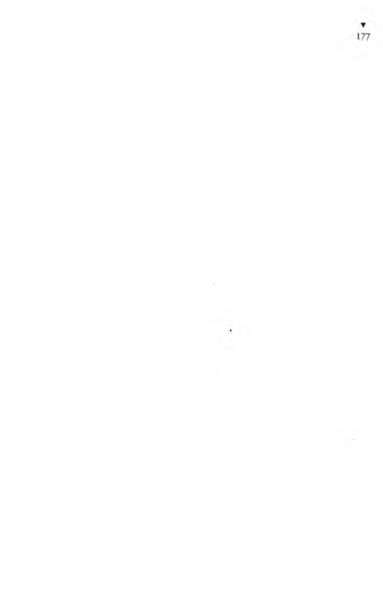
Demek, her bir memurun, müdürün kapısına bir odacı dikmelerinin başka bir nedeni var... Dahâ da anlamadın mı hey avanak?
Müdürün, memurun isteyeceği şeyi, onların adına odacı ister,
sanki müdürün memurun haberleri yokmuşçasına. Alır alacağını
yurttaştan, birazını da verir elbet müdürüne, memuruna... Öyle
değil mi ya? Yurttaş da işi kolay görülsün, yeter ki işi çabuk olsun
diye, ne isterlerse seve seve verir...”
Yaşar Yaşamaz, hemşerisinin ağzından bunları anlatınca,
koğuşun en yaşlısı,
- Allah razı olsun, Karakaplı Nizami Beyden... dedi.
Yaşar anlatmasına devam etti:
- O odacı olan bizim hemşeriye gidecekmişim, bana orda iş
bulurmuş isterse... Çünkü neden, ordaki memurlar da, müdür de,
odacıya karşı, ne de olsa az bişey gebeymiş... Buyüzden istediğini
yaparlarmış. Odacı da, odacılığını bilir, kendi hissesini ona göre
alırmış. Açıkgözlük etmeye kalkıp da hissesinden artığını aldı
mı, hemen onu odacılıktan kovar, yerine başka birini alırlarmış...
Allahın bildiğini sizden ne saklayayım... içimden, bana da şöyle
bir iş kısmet et Allahım; işi çok bir dairenin verimli bir müdürüne
beni odacı yaptır, diye dua ettim. Hemşerimin anlattığına göre,
odacılıkta ne açıkgözlük edecekmişim, ne de açgözlük. Yoksa
başındaki memurun çakar, seni işinden kovarmış. Nasıl çakar
dersen, bunca yıl okula gidip dirsek çürütmüş adam, hiç anlamaz
mı kendisine verilen hissenin az mı, çok mu olduğunu... Yapıda
çalışan hemşerim, odacı olan hemşerimizin çalıştığı dairenin
yerini söyledi. “Sağol!” deyip yürürken, ardımdan,
“Dur aman! Bu başındaki kötü kasketle gidilmez!” dedi.
“Neden?” diye sordum.
“Neden olacak, yüzüne bakan olmaz da ondan...”
“Eyvah öyleyse!.. Ben bu kasketi çıkardım mı, otomatik
uçaksavar topu gibi ardarda hapşırırım... Daireye gidince çıkarır,
elimde tutarım.”
Hemşerim,

“Gene olmaz...” dedi.
“Neden?”
“Çünkü başında iyi mal bir föter olmalı ki, seni bir adam
sansınlar. Hani Hocamızın kürkü hesabı... Bu zamanda kürk
giyilmez; ama adamın adamlığı da şapkasından belli olur. Sen
paraya kıyıp, güzel bir föter çekeceksin kafana... Al şu parayı, işe
girince ödersin bana... Önce burdan çık, başına bir föter kondur,
sonra git daireye... Bu simitçi kasketiyle gidersen, seni devlet
dairemizin kapısından içeri bile baktırmazlar...”
Aldım parayı hemşeriden doğru gittim şapkacı dükkânlarına.
Şapkacı vitrinlerinden şapkalara baktım durdum. Dükkândan
içeri adımımı bile atamadım. Çünkü vitrindeki şapkaların fiyatına bakınca boşu boşuna girmişim neye yarar... Hemşerimin verdiği para, şapkanın en ucuzunu bile almama yetmez. Beni
satsan bir şapka etmem; şapkalar öyle pahalı. Gelgeldim, şapkacı
vitrinlerinin önünden de ayrılamıyorum. Çok güzel föterler
var... Onlardan beğendiklerimi birer birer başıma geçiriyorum.
Yani başımdaymış gibi kendimi düşlüyorum, dalgamı geçiyorum. Sanki vitrinin camından elimi uzatıp beğendiğim şapkayı alıyorum, kafama geçiriyorum. Bu yakışmadı, atıyorum onu,
ötekini alıyorum. Hah, bu daha bir yaraştı. Şapkaları değiştirip,
aynaya bakar gibi, vitrin camında kendimi seyrediyorum. Camın
karşısında bir sağa dönüyorum, bir sola... Hemşerim haklıymış
yahu, beni başımda bu föterlerden biriyle, al götür, istediğin
devlet dairesinin başına geçir. Kim görse, Yaşar Bey der... Karnım acıkmasa, şapkacı vitrinlerinin önünden ayrılacağım yok, o kadar hoşuma gitti. Gitmez mi canım, ben kendimi bu kadar da
yakışıklı bilmezdim. Adamın adamlığını şapka ortaya çıkarırmış...
Camekânlı el arabası içinde köfte pişirip satan köfteciye gidip,
- Ver şurdan birbuçuk porsiyon, soğanı bol olsun... dedim.
Hemşerimin şapka alayım diye verdiği paradan birazını verip
bir güzelce karnımı doyurdum. Tok karnının üstüne föteri de
giyeceksin ki, asıl o zaman işte adam olacaksın.
Ordan doğru, kullanılmış giyecek satılan pazara vardım. Yalnız
giyecek değil, orası öyle bir pazar ki, orda yok yok... Bildiğin
bilmediğin ne kadar eşya varsa, hepsi satılıyor orda, yalnız herbi-
şeyin kullanılmışını satıyorlar. Kullanılmış meme torbaları, hani
karıların taktığı... Kullanılmış takma dişler, topalların koltuk
değnekleri. Karı dersen, karı da satıyorlar o pazaryerindc, lâkin
çokça kullanılmış. Başladım şapka aramaya. Kullanılmış çok
güzel föterler varsa da, almaya param yetmiyor. Sonunda bir föter
buldum. Satıcı, cebimdeki paranın iki katı fiyat istediyse dc, sıkı
pazarlık ederek Allahın izniyle biz bu föteri fiyatının üçte birine
alırız diye düşündüm. Föter çok güzel föter, tek bir kusuru var,
bana çok büyük geliyor. Başıma koydum mu, föter boğazıma
kadar geçiyor. Büyük olmasına büyük ama, iyi mal olduğundan
almak istiyorum. H atta büyük olduğu daha bile iyi, çünkü,
başıma büyük geliyor bahanesiyle fiyat kırarım.
“Başıma büyük geliyor,” dedim.
Satıcı,
“Hiç de büyük değil, tam senin başına göre...” dedi.
“Yahu, boğazıma kadar geçiyor, büyük işte...” dedim.
O zaman satıcı ordaki kalabalığa,
“Allah rızası için tanıklık edin yurttaşlar, bu şapka bu adamın
başına büyük mü?” diye bağırarak sordu.
Ordakiler de bu satıcının arkadaşları olduklarından,
“Tastamam başına göre, çok da güzel oturmuş...” dediler.
Ben onları göremiyordum. Çünkü başımdaki şapka çeneme
kadar geçmiş olduğundan gözlerim şapkanın içinde kalmıştı.
Ben o zaman,
“İyi diyorsunuz ama, gözlerim şapkanın içinde kaldı, hiçbişey
göremiyorum...” deyince, ordakilerden bir hergele,
“Görmeyiver ulan, görüp de ne yapacaksın... Görülecek bok
mu var bu dünyada!” demesiyle pazaryerindc bir kahkahadır
koptu. Şapkayı başımdan çıkardım.
Yanıma ordan biri yanaşıp, kulağıma dostça,
“Sen bu şapkayı kaçırma, iyi mal...” dedi.
“Biz malın iyiliğine bişey demiyoruz ama, gözlerim şapkanın
içinde kalıyor...” dedim.
O zaman o adam yüksek sesle,
“Gözünün geldiği yerlere, şapkada iki delik açarsın...” dedi.
Bir kahkaha daha koptu. Belli ki beni gırgıra alıyorlar.
Satıcı,
“Bu şapka halis İtalyan malıdır, bunun üzerine şapka olmaz.
Bu zamanda beşyüz lira versen böyle şapka alamazsın. Al sen bu
şapkayı, bana dua edeceksin...” dedi.
Neyse uzatmayalım, tut aşağı vur yukarı, sıkı bir pazarlıktan
sonra şapkayı aldım, başıma geçirdim. Şapka başımdayken
nasıl olduğumu görmem için hep vitrin camlarına baktığımdan
yolda ona buna çarpıyorum. Evet, şapka yakışmış bana, büyük
de ol masaymış...
Yolda tosladıklarımdan birine,
“Şapka büyük, çok büyük de...” dedim.
Yine ordan biri,
“Şapka büyük değil, senin kafan küçük...” dedi.
Boynuma kadar geçmesin diye, şapkayı arkaya atarak başıma
koydum, yani şapka ensemi örtüyor. Şapka ensemde, vitrin camlarında kendimi seyrederek giderken, birden şapkamı başımdan yel almasın mı! Şapka başımdan uçtu, havalandı gidiyor. Yahu,
cadde de kalabalık iyice, taşıtlar vızır vızır... Şapkanın ardından
koştum... Tüh, şapkayı yakalayacağım diye bir arabanın altında
kalıp canımdan olacağım... Varsın olsun, şapkayı tutmalı... Neyse
şapka havadan yere kondu, yerde tekerleniyor. Koştum, tam
vardım yanma, elimi uzatıyorum tutmak için, ulan namussuz
şapka, sanki canlıymış da benimle oyun yapıyormuş gibi, duruyor duruyor da tutmak için tam ben elimi uzatınca fırlayıp öte gidiyor... Tam elimi atıyorum, uçuyor öteye... Onca kalabalık işini
gücünü bırakıp yolundan kaldı, herkes beni seyrediyor. Gülen
gülene... Dersin ki şapkanın içinde şeytan var. Hele bir kadın
nendeyse gülmekten bayılacak, kasıklarını tutarak gülüyor. Yahu,
mal canın yongasıdır demezler mi„ne doğruymuş... Şapkam bir
kanatsız kuş gibi rüzgârda uçarak, canlı gibi sanki tutmayayım
diye benden kaçarak, geçen bir arabanın tekerleri altına girmez
mi! Bana birden, şapka canlıymış gibi, sanki bir kedi, bir köpek
eziliyormuş gibi geldi, ölümü de göze alıp kendimi tekerlerin
altına attım... Araba geçip gitti, benim şapka ezik büzük ortada
kaldı. Eh artık uçacak, kaçacak hali de kalmadı diye elimi uzattım,
tam tutacağım, parmaklarımın arasından fırlayıp havalanıp uçup,
martı gibi bir su birikintisinin ortasına konmadı mı! Artık nasıl
bir hırsla bunun üstüne atılmışsam, bunu yakaladım ama, ben
de suya dalıp çamura belendim. Herneyse şapkayı yakaladım
ya... Orda herkes bana bakıp güldüğünden, caddeyi dolanıp bir
tenha yere varınca, şapkayı iyice sıkıp suyunu akıttım. Elimle
kalıpladım. Kafama geçirdim, baktım niyeti kötü, gene fırlayıp
uçacak kafamdan... Alışmadık yerde don durmadığı gibi, alışmadık kafada da şapka durmuyor. Şapkanın hakkı var, koskoca şapka benim küçük kafamda nasıl dursun... Baktım, yerde bir gazete
uçuşuyor. Aldım gazeteyi, güzelce katlayıp şapkamın içindeki
meşinin arasına çepeçevre yerleştirdim. Hah şöyleee... Şapka
artık çeneme kadar geçmiyor çok şükür. Kaybederim, biyerde
unuturum da, bulan sahibini tanısın diye, cebimdeki vesikalık
fotoğraflarımdan birini de astarıyla meşinin arasına yerleştirdim.
Şapkayı geçirdim kafama. Evet, artık başıma iyi oturdu, uçamaz.
Ama ne olur ne olmaz diye ben gene başımdaki şapkamı bir elimle
tutuyorum. Gözüm korkmuş bikez... Yel çokça üfürdü müydü,
o zaman iki elimle tutuyorum şapkamı. İki elimle başımdaki
şapkamı tuta tuta, bizim hemşerinin odacı olduğu daireyi ona
buna sorarak buldum. Girdim içeri. İlkin kimseye sormadan hem-
şeriyi bulayım diye arandımsa da görünürlerde yok... Herkesin
girip çıktığı biyere ben de girip bakayım dedim. Tam girerken,
o kapının yanındaki sandalyeye oturmuş, bıyıklarını buran bir
adam, herhal o da bir odacı olacak, “Nereyeee?” diye gürledi.
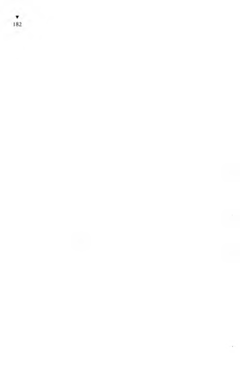
Bunca kişi girip çıkıyor, hiçbirine sormuyor da bana som
yor.
“Bizim bir hemşerimiz var, burda çalışıyormuş da... On.ı
bakmaya gidiyordum...” dedim.
Bana bakmadan, başı öte yanda,
“Bura nere? Bura bir resmi daire...” dedi.
“Biliyorum,” dedim.
Gene başım benden yana çevirmeden,
“Bilmiyorsun,” dedi. “Bilsen, benimle konuşurken başından
şapkanı çıkarırsın. Hadi şapkanı çıkar da öyle gir içeri!”
“Başımda dursun, daha iyi...”
“Duramaz başında!”
“Varsın dursun, bana zararı yok...”
“Olmaz dedik. Resmi bir devlet dairesinde şapkayla odaya
girilmez. Yabani! Çıkar başından da as şu askıya!”
Sanki içime doğmuş gibi,
“Aman yiter miter de... Biri alır gider de...”
“Ne demek! Bura nere? Devlet dairesi... Altın olsa kimse alma/
Senin kötü şapkana kim tenezzül edecekmiş burda...”
İster istemez başımdan şapkamı çıkarıp, kapı arkasındaki ko
ridorun duvarına dayalı askıya astım. İçeri girip baktım, bizim
hemşeriye benzer kimse yok. Allah sizi inandırsın ağbiler, içen
girmemle çıkmam, iki dakika sürmedi. Dışarı çıkınca, nasıl ols.ı
şapkam askıdadır diye, o yana bakmadan almak için elimi attım,
ama elimin altında askının yuvarlak ağacı... Yahu, şapkam yok!.,
diye bağırmaya başladım:
“Şapkam! Şapkam! Şapkam!”
Hâlâ bıyıklarım burmakta olan odacı, kılı kıpırdamadan,
“N ’olmuş şapkana?” diye sordu.
“Yahu arkadaş, daha bir dakika önce, senin gözünün önünde
ben bu askıya şapkamı asmadım mı? Sen de gördün asarken..
İçeri girmemle çıkmam bir oldu. Çıktım ki şapkam yok. Nenle
benim şapkam?”
“Ben senin şapkanın bekçisi miyim be!”
“Değilsin elbet... Ama sen çıkar da as dedin, ben de astım...
Alanı görmüşsündür, ne olur söyle... Biri şaka mı yaptı yoksa...
Yeni almıştım yahu, daha bugün giydim başıma... Hiç böyle şaka
olmaz... Aman şapkam?”
“Bağırıp durma! Resmi daire bura... Kimse senin kötü şapkanı
çalmaz.”
“Çalmaz da ne oldu ya... Uçmadı ya bu...”
Koridorda bağırarak dolanıyordum:
“Güzelim şapkam gitti... Hem de İtalyan malıydı, halis İtalyan
malı. Bu zamanda beşyüz liraya bile alınamaz öyle bir şapkaydı...
( iören var mı şapkamı?”
Bir delikanlı koridordaki kalabalıktan ileri atılıp,
“Ben gördüm...” dedi.
“Aman nerde arkadaş?”
“Az önce durakta gördüm, otobüse binip gitti.”
Herkesin işi yok, oğlanın zevzekliğine gülüyorlar.
“Yepyeni şapka yurttaşlar... Ben çıkarmayacaktım başımdan,
odacı zorla çıkarttı. Şu askıya astım işte...”
Biri daha,
“Burası resmi daire, burda hiçbişey kaybolmaz!” deyince ordan
başka biri de ona,
“Evet, hiçbişey kaybolmaz, ne var ki arayınca da bulunmaz!”
dedi.
Ben, şapkam diye dolanırken, dairenin hademesi kılıklı biri,
“Şapkan yeşil miydi?” dedi.
“Hee, yeşildi ya, hem de ördek başı gibi yeşildi.”
“Tüylü müydü?”
“Evet, tüylüydü... Yumuşacık, tavşan tüyü gibi...”
“Büyük bir şapka değil mi?”
“Hah işte, ta kendisi... Nerde?”
“Kordelası da siyah mıydı?”
“Siyahtı evet. Bırak anlatmayı da, şapkam nerde, onu söyle!”
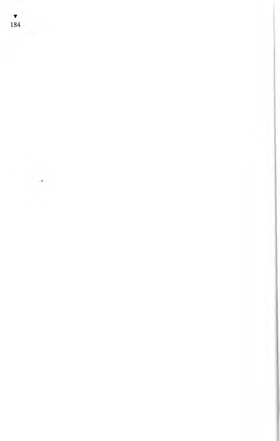
Demin bana, “Resmi dairede hiçbişey kaybolmaz!” diyen
adam, hademenin şapkamı tanıtması üzerine,
“Gördün mü,” dedi, “ben sana resmi dairede hiçbişey kaybolmaz demedim mi?”
Hademe bana hâlâ soruyor:
“Kenarları da kıvrık mıydı?”
Tam sırası geldi, herife, “Ananın örekesiydi...” diyeceğim ya,
kızar da şapkanın yerini söylemez diye korkumdan söyleyemiyorum.
“Evet, kenarları da kıvrıktı.”
“Şöyle kenarları yukarı bükük, değil mi?”
“Evet, büküktü ulan, büküktü...”
“iki de hava deliği var mıydı yanlarında?..”
Şimdi deliğinden meliğinden başlayıp ana avrat düz gideceğim
ya, zor tutuyorum kendimi.
“Allah Allah... Şimdi çat diye çatlayacağım yahu... İşte o şapka
benim şapkam kardeşim. Söyle nerde?”
“Demek o senin şapkaydı?”
“Hele şükür anladın...”
“Ben onu askıda biri unutmuş da gitmiş sandım...”
“Eee?”
“Götürdüm Vecdi Beye verdim.”
“Vecdi Bey de kim?”
“Vecdi Bey, ikinci kısımda memur... Kayıp ve de bulunmuş
eşya işlerine o bakar.”
Hademenin gösterdiği odaya daldım. İçerde oyunda parmak
şıklatır gibi yazı makinesinde yazan güzel kızlar var. Bir adamı
gözüme kestirip,
“Vecdi Beyi arıyorum,” dedim.
“Benim. Ne var?” dedi.
“Buranın bir hademesi bulmuş benim şapkamı da size getir-
♦ »
mış...
O Vecdi Bey birden kızıp bağırmaya başladı:
G Ö S T E R K İ M L İ Ğ İ N İ , AL Ş A P K A N I
▼
185
“Sanki burda bizim işimiz az, bir de şapkanızı orda burda
unutursunuz, bizim başımıza iş çfkarırsınız.” —Yazı makinesinde
yazan kızlardan birine d ö n d ü - “Bulunan şapkanın evrakı ne
oldu? Demin sana yazdırmıştım...”
Yazıcı kız,
“Efendim, ben onu kayıt için evrak kalemine gönderdim,”
dedi.
“Aman, nereye, nereye?” diye sordum.
Vecdi Bey adlı memur,
“İki elinizle bir şapkanıza sahip olamazsınız... Koridordaki
askıda bulunmuş bir şapka... Evrakını tanzim edip sevk ettik!”
diye bağırdı.
“Şimdi n’olacak?”
Vecdi Bey, yazıcı kıza,
“Yızdığın yazının müsveddesi ncıde, bulun şunu!” dedi.
Kız, eşelenen tavuk gibi, kâğıtlar, dosyalar arasında onbeş dakika kadar çırpınıp debelendikten sonra bulduğu yazılı kâğıdı uzattı:
“Buyrun!”
Vecdi Bey bana,
“Müsveddeyi okuyorum, aç kulağını da iyi dinle!” deyip
okumaya başladı:
“Özeti: Koridordaki askıda bulunan, koyu yeşil renkli, uzun
tüylü, çok kullanılmış...”
Ben adamın okumasını kesip itiraz ettim:
“O kadar da çok kullanılmış değildir, yeni bile sayılır,” dedim.
O okumasını sürdürdü:
“Çok kullanılmış, kirli ve eski olup, siyah kordeleli ve sol yanında iki hava deliği bulunan, sahipsiz bir şapka hakkındadır.”
“Çok güzel yazdırmışsınız, ağzınıza sağlık... Çok şükür evrakım bulduk, şimdi bir de Allahın izniyle şapkamızı bulsaydık...”
dedim.
Yazıcı kız,
“Bu yazının aslını şapkaya iğneleyip evrak kalemine kayıl.ı
gönderdik. Burdan çık alt kata in, doğru git, karşına gelen büyük
kapıdan gir, soldaki üçüncü oda evrak kalemidir. Orda bulursun."
“Eksik olma bayan,” deyip fırladım.
Dediği yerdeki odaya girdim ama, odada kimse yok. Karşımda
kâğıtlardan, dosyalardan yığılmış bir koca tepe. O tepenin alım
da bir öksürük duymasam, kimse yok diye odadan çıkacağım
Öksürük duyuldu ama, insan görünmüyor.
“Burda insan yok mu?” diye seslendim.
O yığılı kâğıtlar oynamaya başladı, sonra bir ses duydum:
“Ne var?”
Kâğıt yığını arasından cavlak bir başın tepesini görebildim.
“Aman beyim, benim şapkamın evrakını buraya yollamışla t
da. Evrakı, benim halis İtalyan malı şapkama iğneleyerek hem
de... İğnelemeseler olmaz mıydı sanki...”
“Kaç numara?” diye sordu.
“Kaç numara olduğunu Allah bilir ama, herhalde ellidokıı/
numara olacak,” dedim.
“Numarası kaç?” diye bir daha sordu.
“Eliidokuz...” dedim.
Başı cavlak yaşlı memur,
“Eliidokuz, eliidokuz...” diye diye o kâğıt yığınını didiklemeye
başladı.
“Sakın bir yanlışlık olmasın...” dedi.
“Belki de altmıştır,” dedim.
“Kesin bişey söyle, eliidokuz mu, altmış mı?” diye öyle biı
bağırdı ki, ben korkup bu kez,
“Öyleyse altmışbir...” dedim.
Çünkü şapka başıma çok büyük geliyordu.
Yaşlı memur bu kez,
“Altmışbir, altmışbir...” diye söylene söylene önünde tepe
olmuş kâğıt yığınını karıştırdı, çıkardığı bir kâğıdı,
“Hah buldum...” diye sevinerek okudu:
“Özeti: Terfıimin politik sebeplerle geciktirilmesi ve memuriyet
ııuluıllimin haksız olarak değiştirilmesi hakkındadır.” Başını
Kağıttan bana çevirdi. “Bu mu senin evrakın?”
“1 iayır efendim benimki şapka...”
“Evrak numarası altmışbir dedin, altmışbir numaralı yazı bu
1”
ışı c!
“Aman efendim, bağışlayın... Ben evrakın numarasını nerden
bileyim? Şapkanın numarasını sordunuz sandımdı.”
Bir zaman daha kâğıtları karıştırıp o yığını daha da karman
•.orman ettikten sonra buldu:
“Hah işte, şansın varmış ki bulduk... - O k u d u .- Özeti: Koridordaki askıda bulunan, koyu yeşil renkli...”
Boşuna arkasını okumasın diye,
“Evet, benim şapkam...” dedim.
Ama o gene de okudu:
“... uzun tüylü, çok kullanılmış...”
“O kadar çok kullanılmış değildir, hatta yeni bile sayılır,”
dedim.
Şapkamın çok kullanılmışlığını herkese ilan etmeye ne hakları
var, öğrenmeyen kalmadı.
Okumasını sürdürdü:
“... çok kullanılmış, kirli ve eski olup...”
Artık dayanamayıp bağırdım:
“İster kirli, ister pis, size ne benim şapkamdan yahu... Verin
benim şapkamı da gideyim be!”
“Biz o şapkayı daire müdürüne gönderdik,” dedi.
“Şapka daire müdürünün değil ki, benim. Neden ona gönderdiniz?”
“Usul böyledir. Bulunmuş eşya ona gider. O da ambara teslim
eder.”
“Eyvaaaah!” diye bağırdım, “Yahu büyüklerden bir tanıdığım
da yok ki, devlet dairesine kaptırdığım şapkamı çekip alsın da,
şapkamı başıma giyeyim.”
Çıktım ordan. Üst katta daire müdürünü arıyorum. Yoruldum.
Bir tahta sıraya oturdum. Yanımda, kucağı yazılı kâğıtlarla dolu
bir yaşlı kadın vardı.
“Senin derdin nedir oğlum?” diye sordu.
“Hanım teyze, şurdaki askıya şapkamı asmıştım. Gözle kaş
arasında ordan şapkam uçtu. Bir hademe, sahipsiz sanıp şapkamı Vecdi Bey denilen memura vermiş. O da evrak kalemine göndermiş. Ordan ikinci kısma göndermişler, ikinci kısımdan
da kayda göndermişler, kayıttan da idare m üdürüne...” diye
anlatırken kadın,
“Maşallah maşallah... Bu kadar uzun işlemi ne kadar zamanda
yaptırdın oğlum?” diye şaşarak sordu.
“Yarım saat oldu olmadı...” dedim.
“Aman ne şanslısın, ne şanslısın... Ben iki aydır buraya gelip
gidiyorum, odalardan odalara sürünüyorum da, hâlâ yandaki
odadan bitişik odaya bir evrakı getirtemedim...” dedi.
Arkadan da,
“İstediklerinin işini şıp diye yapıveriyorlar. Ya büyük yerden
bir iltimasın vardı yada bir yolunu buldun...” diye ekledi.
“Aman teyze,” dedim, “ben bilmez değilim bu resmi daireleri.
Ne iltimasım vardı, ne de kimseye rüşvet verdim. İşime yarar bir
işlem olsaydı seninki gibi evrakım altı haftada masadan masaya,
altı ayda da odadan odaya gitmezdi. Ama zararıma olduğundan,
altı dakikada işlemi yaptılar da bitürlü işlemin arkasından yetişip
şapkamı yakalayamıyorum.”
Sonunda Allahın izniyle, benim de ordan oraya koşmamla
daire müdürünü buldum.
“Beyfendi, affedersiniz, benim bir şapkam vardı da...” dedim.
“Bana ne senin şapkandan be, burası vestiyer mi?” diye beni
tersledi.
“Hayır... Yani... Benim şapkam koyu yeşil renkli... Yandan
iki hava deliği olan halis İtalyan malı bir şapka...” diye açıklıyor
dum ki,
“Allah Allah! Bütün deliler de gelir beni bulur...” diye başını
i İt i yana sallayarak söylendi. '
“Efendim, benim şapkamı, evrakıyla birlikte...” Bana sözümü
bitirtmedi,
“Haa, şu yeşil renkli şapka hakkındaki evrak...” dedi.
“Evet...” dedim.
“O şapkanın evrakı çok birikmiş, bir tomar olmuştu. Biz de
yazıları tarih sırasına koyup bir dosyaya yerleştirdik. Dosyayı
şapkaya iğneleyip...”
“Aman nerde? Verin bana!”
“Aidiyeti cihetiyle sevk ettik.”
“Bu kadar acele sevk edecek ne vardı sanki...”
“Sizlere de hiç yaranılmaz. Hem resmi dairelerde işler yavaş
yürüyor diye yakınırlar, hem de işlemleri çabuk yaptık diye
kızarlar.”
“Şapkamı biraz bekletseydiniz, yetişecekmişim.”
“Burası emanetçi dükkânı değil...”
Tersyüzü döndüm. Benim İtalyan malı şapkama iğnelenerekten
dosyasıyla birlikte son gönderilen ambarı araya sora buldum.
Ambar odasındaki memura,
“Affedersin beyim, bura ambar, değil mi?” diye sordum.
O da,
“Ambar. N ’olacak?” diye cevap verdi.
“Hiçbişey olacağı yok. Benim şapkamı dosyasıyla birlikte
buraya göndermişler de...”
“Haa, az önce gönderilen şapka... Yeşil renkli şapka hakkındaki
işlem...”
“Evet. İşte o. O nu soruyorum.”
“Niçin soruyorsun?”
“O şapka benim de, almaya geldim.”
“Yoo, ben o şapkayı sana veremem.”
“Şapka benim beyim, kendi malım.”
“Nerden belli senin olduğu?”
“Şapkamın nasıl bir şapka olduğunu bir bir anlatayım. Dediklerime uygunsa benimdir, verirsin. Uymazsa verme. Benim şapkam tüylüydü.”
“Tüylü şapka çoook...”
“Yumuşaktı, tüyleri tavşan tüyü gibi ve de uzundu.”
“Dünyada uzun tüylü şapka dolu.”
“Hem de eliidokuz numara...”
“Senin şapkan olmadığı şurdan da belli ki, senin kafan ceviz
kadar be... Eliidokuz numara sana çadır olur.”
“Arkadaş benim kafam ceviz kadar, fındık kadar, sana ne? Şapka
benim. Halis İtalyan malıdır, içinde fabrikasının yazısı var, biraz
silikse de İtalyan malı olduğu gene de belli...”
“İtalyan fabrikası bir sana özel şapka yapmadı ya...”
“Ama benimkisi siyah kordeleli...”
“Bir seninki değil ya siyah kordeleli olan...”
“Yanda da iki hava deliği vardı.”
“Bütün şapkalar ya delikli olur, ya deliksiz...”
“İçinde resmim vardı be! Bütün şapkaların içine de benim
resmimi koymazlar ya...” diye bağırdım.
“Resmin varsa tamam...” dedi. “Bütün dediklerin zapta d.ı
uyuyor. Demek şapka senin.”
“Bir saattir sana onu anlatmaya çalışıyorum ya...”
“Senin olmaya senin ama...”
“Aması kaldı mı ya, benim işte. Ver şapkamı gideyim...”
O sırada zil sesi öyle bir uzun zırlıyordu ki, sağır olan da
duyar.
“Bak paydos zili çaldı. Sen artık yarın geleceksin.”
“Yahu etme beyim, şurdan uzanıp şapkamı vereceksin. Üşenip
de yarma bırakma, ayağını öpeyim.”
“Yoo, şapkayı vermek öyle kolay değil. İşlemi var daha...
Müdür Beye çıkarsın. Ondan bana, ‘şapka verile’ diye buyruk
getirirsin, o zaman veririm. Ben de bir emir kuluyum, Verile'
buyruğu olmadan kendiliğimden veremem...”
Başımda şapka olmayınca kafamı üşüttüğümü, hapşırdığımı
neyi, hepsini anlattımsa da taş yüreğini yumuşatamadım. Hadi
mesi gün geleyim ama, ertesi gün cumartesi, daha ertesi gün
pazar, resmi daireler kapalı. Kafam iki gün örtüsüz kalınca, ben
veııiden hapşırmaya başladım ki, Allah vermesin hiç durmama-
sıya... Pazartesi sabahı hapşıra hapşıra oraya gittim yine. Ben
orda, “Aman şapkam...” diye bütün gün dönendiğimden, oranın
memurları beni tammışlar. Beni görünce,
“Yeşil şapka evrakının sahibi...” diye beni birbirlerine gösterip
gülüşmeye başladılar. Yahu, sen şunlardaki kafaya bak, tam memur kafası, “yeşil şapkanın sahibi” demiyorlar da, “yeşil şapka evrakının sahibi” diyorlar. İnsanları, evrak olmadan düşünemiyorlar gayrı... Erkek memurların bana gülüşmeleri neyse de, karı memurların alayına dayanmak zor.
“Siz gülün, gülün siz bakalım. Şapkasını yitirmeyenler, şapkasını yitirenlerin halinden anlamazlar...” dedim.
Şapka satıcının sözleri hep aklımda kalmış olduğundan onları
söylüyorum gülenlere:
“Halis İtalyan malı... Bu zamanda beşyüz lira versen böyle bir
lı.ıs mal şapka bulamazsın...”
Biyandan da hapşırıp duruyorum. İyi ki benimki sepkenli
değil, kuru hapşırık ama, rüzgârı çok.
Ambardan şapkamı almam için buyruğu M üdür Beyin odasının bitişiğindeki odada bulunanlardan alacakmışım. Girdim odaya ki, içerisi vıcır vıcır yazıcı mazıcı kızlar dolu. Hepsinin
önünde kâğıtlar ve yazı makinesi var. Tıkır tıkır yazıyorlar. İçeri
g,i tince kendimi tutamayıp öyle bir hapşırdım ki, yazıcı kızların
önlerinde birikmiş tepeleme kâğıtları, ürkütülmüş güvercin
sürüsü gibi havaya fırlayıp odanın içinde uçuşmaya başladı.
Bikez hapşırsam iyi, beni bir hapşırık tuttu, makineli tüfek gibi...
Ağzımı kapıyorsam, başımı yere eğiyorsam da boşuna... Yazı
makinelerinin başındaki kızlar bağırıp çağırmaya başladılar:
“Eyvaah... Sabahtanberi bu kâğıtları sıraya koyacağım diye
t anım çıkmıştı benim... Yeter be! Hapşırma artık!..”
“Yani bayan, hapşırık insanın elinde mi ki... İsteyerek mı
hapşırıyorum ben... Padişah fermanı gibi bişey bu hapşırık..."
“Çık dışarı... Dışarı çık da orda ister hapşır, ister ne yapan.m
yap!
İki hapşırık arasında,
“Verin benim şapkamı almama izin kâğıdımı, çıkayım.,
dedim.
Şıp diye istediğim kâğıdı verdiler. Hemen ambardaki menün,ı
götürüp,
“İşte buyrun, istediğiniz yazı, Müdür Bey de imzaladı. Şapkamı
verin diyor,” dedim.
Hiç okuryazar değilmiş gibi kâğıda baktı baktı, elinde hiı
zaman evirip çevirdikten sonra,
“Değil mi ki buyruk çıktı, başi'ıstüne vereyim şapkanı... Gösn ı
kimlik kartını!” dedi.
“Kimlik mi?”
“Kimlik ya... Nüfuskâğıdı yani...”
“Nüfusum yok ki...”
“Olmayınca nasıl veririm şapkayı sana yahu?..”
“Aman beyim, benim şapka işte, içinde kendi resmim de vaı
Vallahi billahi benim, namussuzum ki benim şapka...”
“Hiç boşuna yemin etme. Ben de biliyorum ki senin olmay.ı
senin bu şapka. Ama yarın başka biri çıkar da, o şapka benimdı
derse, ben ne cevap veririm. Senin kimliğin olacak ki, bir tutanak
düzenleyip şapkanı sana teslim edeyim...”
İşte böyle ağbiler... Bunca yaşadım, başıma bir föter kondııı
muştum, onu da devlet dairesi kaptı aldı elimden... Gitti benim
güzelim şapkam, koyu yeşil idi, uzun tüylü idi, siyah kordelesi vaı
idi, halis İtalyan malı idi, bu zamanda beşyüz liraya bile almama/
idi, yanda iki de hava deliği var idi... Uçtu benim şapka, uçlu
gitti... İş bulayım derken güzelim şapkamdan da oldum.
Hükümlülerden uykulu ve derinden bir şaşma ünlemi çıktı:
- Haydaaaa!..
'•fiı Bir Meleksin Şekerim
İV .uakaplı Nizami Beyi bulmak, ondan, o herkesin yardımına
1 ıtş.ııı iyiliksever adamdan kendisine bir nüfuskâğıdı çıkarmasını
mı.ı ıica etmek, Yaşarın kafasına iyice yerleşmişti. Cezaevinde
ı .n.ırken bile, artık eskisi gibi umutsuz değildi. O da ağır cezalı
mahkûmların, kısa cezalıları, “Sayılı günler çabuk geçer, aslanım,”
diye avuttukları gibi, kendi kendisini, sayılı gün çabuk geçer,
diye avutuyordu. Hele şurdan bir kurtulsun, cezaevinden çıkar
ı,ıhmaz ilk işi Karakaplı Nizami Beyi arayıp bulmaktı.
Yaşar Yaşamaz, Karakaplı Nizami Beyi bulmak düşüncesini
hııürlü kafasından çıkaramıyordu. Nasıl çıkarsın, cezaevinde
lııiıiin gün hep ondan konuşulduğu gibi, Kral Sami de akşam
nlııp, koğuşta sayım yapıldıktan sonra, sözünü de, dağarını da
Kendi düzdüğü Karakaplı Nizami türküsünü okuyordu.
Kral Sami, zibidinin en bulunmazıydı. Ama yine de sanı
Kraldı. Çünkü, sabıkada rekor onundu. Hatta kendisi dünya
ı ekorunu bile elinde tuttuğunu söylerdi. Kaç yaşında hırsızlığa
haşladığını bilemiyordu. “Kendimi bildim bileli, enayilerin ça-
ı ıklarım yürütürüm...” derdi sırıtarak. Anası da yaman yankesici
olduğundan, anadan doğma hırsızdı.
Kral Sami akşam sayımından, akşam yemeğinden sonra, koğuş-
t .ikiler kendiliklerinden düzene girip Yaşar Yaşamaz’ı dinlemeye
hazırlanmamışlarsa, koğuş arkadaşlarını düzene sokmaya, koğuşta
sessizliği sağlamaya çalışırdı. Bu işi yaparken de, Karakaplı Nizami
yin düzdüğü türküyü söylerdi.
Köprünün önü cami
Nana nina ninami
H ızır gibi yetişir
Karakaplı N izam i
İkinci dizedeki “Nana nina ninami” ile, dördüncü dizedeki
“Karakaplı Nizami” sözlerini iki kez söylerdi. Üstelik “Nana
nina ninami” uydurmasını, ayıp bir söz biçiminde, o ayıp söze
çok benzeterek söylediği için, Kral Sami’nin yaktığı bu türkii
çok tutulmuştu, bütün hükümlülerin ağzında dolaşıyordu. Bu
koğuştan başka koğuşlara da yayılmıştı. Beyler Koğuşundaki
saygın hükümlüler, ipek pijamalı zimmet suçlusu beyler, yaşlıca
memurlar, kalantor tüccarlar bile, tıpkı Kral Sami gibi, farkında
olmadan, “Nana nina ninami” diye mırıldanırlardı.
Dünyada yiiriir nami
Nana nina ninami
Olmazı olur yapar
Karakaplı N izam i
Kral Sami, Rumeli göçmeni olduğundan “ı” sesini “i” diye
söyler, “namı” diyemez, “nami” derdi.
Vardır ham hamami
Nana nina ninami
Sayende yaşıyoruz
Karakaplı N izam i
İpten çeker adami
Nana nina ninami
Avukata ders verir
Karakaplı N izam i
Kral Sami son dörtlüğü söylerken, bütün koğuştakiler de ona
katılır, türkü bir marş gibi söylenirdi:
Hırsız uğursuz Sami
Nana nina ninami
Vatan sana minnettar
Karakaplı N izam i
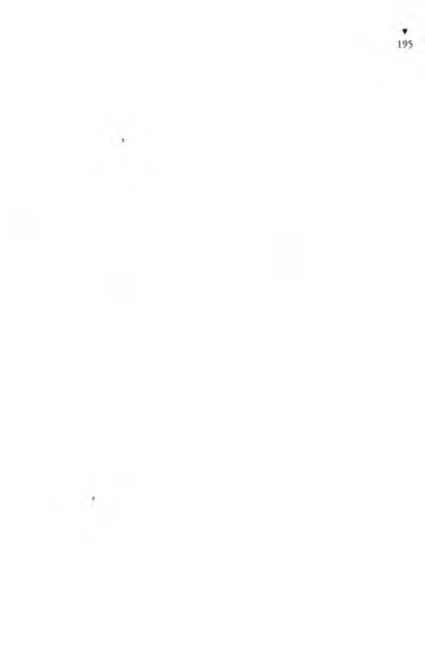
Yaşar Yaşamaz da bu Karakaplı Nizami Beyin türküsüne, hem
sesi, hem sazıyla katılırdı.
*
Gece gündüz dinleye dinleye Yaşar Yaşamaz’ın kulağı, Karakap-
lı Nizami Bey adıyla dolmuştu. Karakaplı Nizami Beyi tanıyan
bükümlüler Yaşara, onun için neler neler söylememişlerdi ki...
Yaşar, başına gelen o inanılmaz serüvenlerini anlattıkça, “Ah ulan
alı... Karakaplı Nizami Bey olacaktı ki...” diyorlardı.
“Heheheeey... Karakaplı Nizami Bey, idamlık adamı ipten
çeker alır be... O na Karakaplı Nizami Bey demişler.”
Bir kış günü hava yağışlı olduğundan koğuşun hükümlüleri
orta bahçeye çıkmamışlar, koğuşta konuşup söyleşip laf kaynatıyorlardı. Konu yine Karakaplı Nizami Beydi, idarede çalıştığı için idareci diye çağrılan hükümlü de o gün koğuştaydı.
Cıgara izmaritleri avcısı yine Karakaplı Nizami Beyi övmeye
haşlayınca, Yaşar.
- Ağbicim, dedi, bana o zamanlar kimse söylememişti o dediğiniz Karakaplı Nizami Beyi. Ben bu Karakaplı Nizami Beyin adını ilk burda duyuyorum. Herşeyde bir hayır vardır dedikleri,
ne doğru... Kul sıkışmayınca Tanrı yardımına koşmazmış. Demek, ben de cezaevine düşeceğim de Karakaplı Nizami Beyin kim olduğunu sizden öğreneceğim. Öyle ya, hapse girmemde
hile bir hayır varmış. Kısmet olur da hapisten çıkarsam, ilk işim,
Karakaplı Nizami Beyi arayıp bulmak olacak.
Yaşar Yaşamaz’ın bu sözü üzerine, ordakilerden bir kahkaha
koptu. Yaşar ın enayiliğine çok gülmüşlerdi. Yaşar, neden kendisine gülündüğünü anlamadığı için, onlara aptal aptal bakıyor, onun bu şapşallığı ötekileri daha çok güldürüyordu. Neden sonra
İdareci,
- Ulan Yaşar Yaşamaz, çok saf oğlansın be! dedi.
- Neden ağbi? diye sordu Yaşar.
- Karakaplı Nizami Bey burda da ondan...
- Nasıl burda? Aman... Yoksa sakın?.. Cezaevinde mi?
- Helbet.
- Nasıl olur ağbi, koskoca bir Karakaplı Nizami Bey, olmazları
olur eden Nizami Bey... Nerde öyleyse?
- Bizim koğuşta olacak değil ya hey avanak Yaşar, helbet Beyleı
Koğuşunda...
- İyi ama ağbicim, anlattığınıza göre, idamlıkları ipten çekip
alan, usta avukatlara derslerin en incesini veren, zamanımızın
bir Hızır Aleyhisselam’ı olan Sayın Karakaplı Nizami Bey, bunca
marifetleri, görülmedik hünerleri varken, nasıl olur da aramıza
düşer ve de kendini hapisten kurtaramaz.
İdareci, Yaşar Yaşamaz’a, Karakaplı Nizami Beyin, yalnız
cezaevinde değil, herzaman, heryerde olduğunu anlattıysa da,
Yaşar bundan bir anlam çıkaramadı. Üstelik cezaevinin Beyleı
Koğuşundaki Karakaplı Nizami Beye acımaya bile başladı. De
mek bu adamın iyiliği kendinden başkalarına diye düşündü.
O günden sonra Yaşar, Karakaplı Nizami Beyi tanımak için,
Beyler Koğuşundaki hükümlülere yakın oldu. Beyler Koğuşunda
seksenden çok hükümlü zengin vardı. Bunlardan hangisiydi
Karakaplı Nizami Bey?
Bigün İdareci’nin yanına yavaşça sokulmuş, sözlerini başkaları
duymasın diye yavaşça ona,
- Kurbanın olayım ağbicim, demişti. Beyler Koğuşunda
kilerden hangisi Karakaplı Nizami Bey? Bana uzaktan bir göste
river...
Hergelenin en domuzu olan İdareci,
- Git Beyler Koğuşuna, burada Karakaplı Nizami Bey hangini/
diye sor... dedi.
Yaşar Yaşamaz,
- İyi ama ağbicim, dedi, Heykelci’nin bana dediğine göre,
tanınmasın diye başka ad kullanır, kendisinin Karakaplı Nizami
Bey olduğunu gizli tutar, hiç belli etmezmiş.
İdareci, Yaşar Yaşamaz’ın enayiliğiyle daha da alay etmek için,
- Evet öyledir, dedi, artık onu Beyler Koğuşunda arayıp
bulmak senin sezişine kalmış bir iş...
C) günden sonra, Yaşar Yaşamaz Beyler Koğuşundakileri
yakından izliyor, içlerinden hahgisinin Karakaplı Nizami Bey
olduğunu sezmeye çalışıyordu. Sonunda içlerinden birini gözüne
kestirdi. Olsa olsa Karakaplı Nizami Bey bu adam olacaktı. Kara-
k.1 pli Nizami Beyliği ençok ona yakıştırıyordu. Adını duya duya,
düşünde, imgesinde bir Karakaplı Nizami Bey canlandırmıştı.
Kafasında yarattığı bu Karakaplı Nizami Bey, biraz Satılmış’a,
yani Satı Beye, biraz babasıyla gittiği nüfus dairesindeki müdüre,
biraz da nüfuskâğıdı ve miras davası için gittiği adliyedeki adamlara benziyordu. İrikıyımdı, gövdeliydi, göbekliydi, enseliydi.
( iörünüşüyle bile insanda saygı uyandırıyor, Yaşar Yaşamaz
onun yanında ezildiğini, küçüldüğünü duyuyordu. Olsa olsa,
Karakaplı Nizami Bey bu adam olacaktı. Ne yaptı etti, bu adamla
konuşmanın yolunu buldu. O irikıyım adam da, kendiliğinden
yanaşan Yaşar Yaşamaz’ı özel işlerinde kullanmaya başladı. Sanki
Yaşar onun özel uşağıydı.
- Yaşar oğlum, bir kahve söyle bana, az şekerli olsun...
- Başüstüne...
- Yaşar oğlum.
- Buyur!
- Bir çay söyle, demli olsun...
- Yaşaaaaar!
- Buyur!
- Cıgara al bana!
- Başüstüne.
Yaşar koşup cıgarayı kantinden alıp getiriyordu.
İrikıyım adam, cıgara paketini Yaşar’ın yüzüne fırlatıp,
- Ulan Yaşar, senin adam olacağın yok, sana kaçtır söylüyorum
dangalak, ben filtresiz cıgara içmem diye...
Yaşar koşup filtreli cıgara alıyordu.
Yaşar, Karakaplı Nizami Beye kul köle olmuştu. Başından
geçenleri anlatması karşılığında, koğuştaki arkadaşlarının aralarında toplayıp verdikleri, Yaşar’ın da kuruş kuruş biriktirdiği
paralar suyunu çekmekteydi. Çünkü, durmadan “Çay getir!”,
“Kahve söyle bana!”, “Cıgara al!” diye buyuran adam, cebinde
akrep varmış gibi, hiç elini cebine sokmuyor, paraları hep Yaşar
Yaşamaz ödüyordu. Yalnız kendisi için ısmarlasa, Yaşar razıydı.
Üstelik, yanında oturanlara da çay, kahve, gazoz ısmarlıyor, cıgara
ikram ediyordu.
- Yaşaaaar! Nerdesin ulan?
Yaşar Yaşamaz, iyi bir hizmeteri gibi, adamın karşısında topuklarını vurup esas vaziyete geçtikten sonra,
- Buyur! diyordu.
- Hadi çabuk, bize dört demli çay, iki orta şekerli kahve, bir
de meyve suyu söyle!
- Başüstüne!
Yaşar koşuyordu.
Feda olsundu. Nasıl olsa, Yaşar’a bir nüfuskâğıdı uyduracak
olduktan sonra, Yaşar’ın parasının gitmesinin hiç önemi yoktu.
Bu adamın Karakaplı Nizami Bey olduğuna Yaşar Yaşamaz iyice
inanmıştı. Hiç para harcamamasından, bir de o buyurmasından
anlıyordu bunu. Buyurması da ona bir yaraşıyordu ki... Bir de,
ağzı laf yapıyordu. O konuşurken, onu dinleyenler gülmekten
kırılıyordu.
Yaşar’ın dişinden tırnağından biriktirdiği paralar bitmek üzereydi. Kendisi, izmarit Avcısı nın bahçeden topladığı cıgara izmaritlerinin artık tütünlerinden satın alıp cıgara sarar içerken, ona en pahalı filtreli cıgaralar alıyordu, buna para mı dayanırdı.
Artık konuşmalı, söylemeliydi.
Merdiven altındaki gölgede Beyler Koğuşundan altı yedi hükümlü sandalyelere oturmuşlar, söyleşiyorlardı. Yaşar, Karakaplı Nizami Beye yaklaşıp, utana sıkıla,
- Benim, dedi, bir derdim var ki, o derdime ancak Karakaplı
Nizami Bey derman bulur.
Yani böylece, o adama, “Ben senin Karakaplı Nizami Bey oldu
ğunu çaktım, hiç boşuna kendini saklama!” demek istiyordu.
- Karakaplı Nizami Bey mi? Kimmiş o?
Yaşar Yaşamaz, yine utana sıkıla, bu kez, “Atlatamazsın beni,
biliyorum ben seni!” demeye getiren bir kurnaz gülümseyişle,
- Sizin koğuştaymış, Beyler Koğuşunda... dedi.
- Kim söyledi sana ulan?
- Bizim koğuşta bir idareci var ya hani, cezaevi idaresinde
çalıştığından ona İdareci derler, işte o idareci söyledi.
Bunun üzerine, irikıyım adam, sesini yükselterek, ordakilere,
idarecilik üzerine söylev çekmeye başladı.
- idareci ha... Hah hah hah... Neyi idare ediyormuş? Ne var
da neyi idare edecek?.. —Çevresindekilere anlatmaya başladı- Biz,
son derecede idareci insanlarızdır. Bu dünyada bizim gibi idareci
yoktur, tarihte gelmemiştir ve gelemez... Bakın neden? Dünyanın
başka yerlerinde de idareci insanlar çok var. Var ama, onlar ancak
olan bişeyi idare ederler. Olan şeyi herkes idare eder yahu...
Marifet, olmayan bişeyi idare etmektir. Bakın örnek vereyim
size... Bizde su var mı allaşkınıza, su var mı, su?..
Cezaevi Kerbelaya dönmüştü. Geceleri ancak on onbeş dakika
musluklardan su akıyor, geri kalan zamanlarda musluklardan
akşama dek hava fışkırıyor, ondan sonra hava bile gelmiyordu.
İstanbul da yanıp kavruluyordu susuzluktan ama, cezaevinde
susuzluk hiç çekilmiyordu. Buyüzden, irikıyım adamın, “Su var
mı, su?” sorusuna ordakiler hep birden,
- Yok! diye karşılık verdiler.
- Gördünüz mü işte, su yok, ama Sular idaresi var. Adamlardaki idarecilik hünerine bakın ki, olmayan bişeyi bile idare etmeyi başarıyorlar. Peki, su yok da, elektrik var mı, elektrik?
Yine ordakiler,
- Yok! diye karşılık verdiler.
Cezaevinde günün, gecenin en olmadık zamanlarında elektrik,
şehir akımı saatlerce kesiliyor, hükümlüler karanlıkta kalıyordu.
Cezaevinde karanlıkta kalmak, insanın evinde karanlıkta kalmasına hiç benzemiyordu. Çünkü, cezaevindekilerin hepsinin de
dostu, düşmanı vardı, insan, karanlıkta kim vurduya gidebilirdi.
Hatta, gardiyanlardan birini, bir koğuşun hükümlüleri, Yarım-
porsiyon sanarak, elektriğin kesildiği zamanı fırsat bilip, bir iyice
pataklamışlardı.
Soruyu soran adam,
- Gördünüz mü, dedi, elektrik yok ama Elektrik idaresi var.
Bu ne mucizedir arkadaşlar, Hazret-i Musa Aleyhisselam bile
böyle bir mucize gösterip de olmayan bişeyi idare edemedi. Peki,
elektrik yok, su yok da, havagazı var mı? Evlerinizde havagazı
var mıydı?
Dinleyenlerden yine,
- Yoktu! diye sesler yükseldi.
- Yoktu ya... Yok ama, Havagazı idaresi var. Arkadaşlar, bize
boşu boşuna idareci millet dememişlerdir. Yahu, telefon var mı,
telefon? Siz işleyen, konuşulan telefon gördünüz mü hiç?
- Yok, görmedik.
- Eveeeet... Telefonla konuşulmaz, telefon yoktur ama, bizde
olmayan telefonun bile Telefon idaresi vardır.
Böylece bir bir kendileri olmayıp da idareleri olan şeyleri
saydıktan sonra,
- Yahu, hükümet var mı, hükümet? diye sordu.
Bu kez kimseden ses çıkmayınca, kendisi, bir kahkaha attıktan
sonra,
- Hükümete söz yok, dedi, bizi idare ediyorlar işte...
Daha sonra, Yaşarı ordakilere gösterip,
- Bu dangalak da, dedi, cezaevi idaresinde çalıştığı için sanı
idareciye çıkmış bir heriften söz ediyor. Ulan ne idaresi, ne biçim
idare? Cezaevinde, dışarda satılması yasak olan eroin, afyon, esrar
serbest satılır, tabanca, bıçak içeri serbest girer, herifler hâlâ idare
ediyorlar... Yahu, olmayanı idare etmek bize mahsus be... Zavallı
memur, amirine herhangi bişey için “Efendim, yok!” derse, amiri,
elini havada döndürüp, “idare ediveryahu!” der. Bizde idarecilik,
olmayanı idaredir. Neden herif sonunda dayanamayıp da, “İdare
elden gitti, elde kaldı maslahat!” buyurmuş... Bizim üstümüze
dünyada idareci yoktur arkadaş. Baksanıza, demokrasi yok ama,
demokratik idare var be!./
Oradakiler, bu kez irikıyım adamın sözüne korkudan gülemediler.
Yaşar’a,
— Neymiş senin derdin? Anlat bakalım... dedi.
Yaşar, bir umar bulunacağı umuduna kapılıp sevinçle derdini
anlattı. Nüfusta, ölü diye yazılı olduğundan nüfuskâğıdı alamadığını anlattı.
İri adam,
— Bir insan pekçok türlü ölür: Hukuki olarak ölür. Siyasi olarak
ölür. Fizik olarak ölür. Psikolojik olarak ölür. İnsanın tam olarak
yaşayabilmesi için, bunların hepsinin birden yaşaması gerekir.
Yaşar, bu sözlerden bişey anlamadı ama, derin anlamlı sözler
olmalı diye düşündü. Bu denli derin anlamlı sözleri de ancak
Karakaplı Nizami Bey konuşabilirdi.
Az önce kahkahalarla gülenler birden susmuşlar, birer ikişer
oradan savuşmaya başlamışlardı ki, Yarımporsiyon da, düdüğünü
fırt fırt öttürerek,
— İçeriii, içeri! diye bağırmaya başlamıştı.
Akşam olmuştu. Hükümlüler koğuşlarına kapatılıyordu.
Yaşar Yaşamaz, koğuşuna girdiği zaman, cebinde on parası
kalmamıştı ama, çok mutluydu, çünkü Karakaplı Nizami Beyi
sonunda bulmuş olduğuna inanıyordu. Çok sevinçliydi. Kara-
kaplı Nizami Beye yalvarıp yakarıp kendisine bir nüfuskâğıdı
sağlamasını dileyecekti, işte bu sevinçle akşam yoklamasından,
koğuştakiler de yemeklerini yedikten sonra, Kral Sami, koğuşu
düzenlemek, herkesi Yaşar Yaşamaz’ı dinlemeye hazırlamak
için uğraşır, biyandan da türküsünü söylerken, Yaşar Yaşamaz
da coşmuş, Kralda birlikte hem onun türküsüne katılmış, hem
de sazıyla eşlik etmişti. Derken bütün koğuştakiler de türküyü
çığırmaya başlamışlardı.
Köprünün önü cami
Nana nina ninami
H ızır gibi yetişir
Karakaplı N izam i
Dünyada yürür nami
Nana nina ninami
Olmazı olur yapar
Karakaplı N izam i
Vardır hanı hamami
Nana nina ninami
Sayende yaşıyo ruz
Karakaplı N izam i
Hırsız uğursuz Sami
Nana nina ninami
Vatan sana minnettar
Karakaplı N izam i
Bağırıp çağırıp içlerini boşaltmışlardı hükümlüler. Yaşar, sazını
durdurunca, koğuştakiler de artık onu dinlemeye hazırdılar. Bir
kısa sessizlik oldu. Usta bir anlatıcı yeteneği olan Yaşar, dinleyenlerinin ilgisini artırmak için söze başlamıyordu. Sonunda Heykelci dayanamayıp,
- Len Yaşar oğlum, di başla, yoğsa şincik ben başlayacağım
yedi geçmişinden... diye şaka etti.
Yaşar, ilgiyi, merakı büsbütün artırmak için,
- Dün gece nerde kalmıştık, onu düşünüyordum... dedi.
Kral Sami,
- Dün gece, dedi, senin şu iki hava deliği olan, halis İtalyan
malı...
Kral Sami sözünü tamamlayamadı, çünkü herkes şapkayı
tanımlamaya kalkıştı:
- Büyük şapka...
- Kordelesi de siyah...
- Kenarlan da kıvrık...
- Hem de yukarı bükük...
- Hem de koyu yeşil renkli...
- Üstelik tüyleri de uzun...
- Sol yanında iki hava deliği olan...
- Hem de eliidokuz numara...
- Çok kullanılmış ve kirli...
Yaşar Yaşamaz, Beyler Koğuşundaki Karakaplı Nizami Beyi
lammış olmaktan o denli sevinçliydi ki, son sözü söyleyene hemen
karşı gelip işi alaya vurdu:
- O kadar da çok kullanılmış değildi... Eski püskü, her ne
boksa, verin benim şapkamı...
Koğuştan bir kahkaha koptu.
Sis düdüğü sesli şişman hükümlü,
- Oğlum Yaşar Yaşamaz, dedi, sen Anşe’yi ne yaptın, Anşe’yi?
Zavallı kızı İstanbul’a getirttin de perperişan mı ettin yoksa...
Yaşar Yaşamaz,
- Emmi, dedi, anlatılma sırası da tam benim Anşe’mc gelmişti,
iyi ki sordun. Başüstüne, anlatayım. Anşe’m, Güher Hanımefendinin köşkünde çalışıyor.
- Güher Hanım da kim ulan?
- Hani, Anşe’yi İstanbul’a getirmiştim, bir arkadaşımın aracılı
ğıyla Boğaziçi’nde bir köşke hizmetçi vermiştik ya, işte o köşkün
sahibi olan kadın. Onca zamandır Anşe, o köşkte çalışıyor, ben
daha Güher Hanımefendinin yüzünü görmemiştim.
“Kız, nerde bu Güher Hanım?” diyorsam da, Anşe’min cevabı
hep,
“O yukardadır, inmez aşağı hiç...” oluyor.
“Neden inmez kız? Yoksa kötürüm ne mi?”
“Kötürümden de beter. Çok şişman olduğundan hiç kıpraş-
ıııaz yerinden. Yatağından divana, divandan şezlonga, şezlongdan
kanepeye, ordan gene yatağa... Ama bir altın yüreği var ki, iyi
kadın olursa bu kadar olur...”
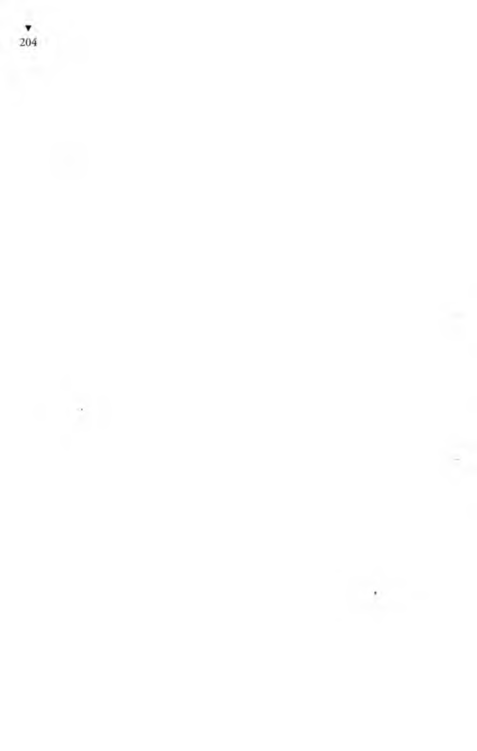
Güher Hanımefendinin kızları, oğullan, damatları da var
ama, hepsi uzaklara gitmiş, bibaşına kalmış koca köşkte benim
Anşe’mle... Bu, ençok benim işime yarıyor. Neden derseniz
ağbiler, ben her akşam köşkteyim. Akşam olup hava karardı mı,
köşke damlıyorum.
İzmarit Avcısı,
- Yoksa gece de mi kalıyorsun köşkte? diye sordu.
Yaşar Yaşamaz,
- Yoook, dedi, işte o yok, koymuyor ki imansızın kızı Anşe
köşkte kalayım. Yalvarıp yakarıyorsam da,
“Nikâh olmadan olmaz!” diyor da başka demiyor.
Aylardan haziran mıydı, temmuz muydu neydi, sıcak bir yaz
günü akşamıydı. Vardım köşke. Anşe de işini bitirdi. Güheı
Hanımefendiye... Haaa, bu yüzünü görmediğim Güher Hanıma,
Güher Hanım denilmiyor; ya Büyükhanımefendi deniliyor yada
Güher Hanımefendi deniliyor. Oraların bakkalı çakkalı da öyle
diyor. Büyükhanımefendi’nin köşkü dedin mi, oralarda bilmeyen
yok. işte o yaz akşamı... Anşe, Güher Hanımefendinin yemeğini
de götürdü, yedirdi, kadını yatağına yatırdı, döndü geldi. Hava
sıcak olduğundan köşkün bahçesine çıktık. Koca bahçe... Zama
nında çok bakımlıymış, ama sonradan bakımsızlıktan bozulmuş.
Bahçenin bir kuytusuna girdik. Boğazdan da bir hafif esimi
başladı ki, insanın terden nemli derisini sanki güvercin tüyüyle
okşar gibi. Gökyüzü, sanki gökyüzü değil de lacivert kadifeden
bir kubbe, altın pırıltılı yaldızları da bu kubbeye bizim için
çakmışlar. Allah Allah... Nasıl bir gece canım, anlatmaya dilimin
gücü yetmez. Ay’ın ışıltısı da vurmuş mu Boğazın sularına...
Gecenin içinde yüce Tanrımın binbir böceği bizim için ötiip
şarkılar söydemekte... Ayıp değil a ağbiler, kanım kaynamaya,
ayranım kabarmaya başladı.
Dilekçeci, coşkulanıp,
- Daha ne bekliyorsun ulan Yaşar, sarıl da kızı devir aşağı...
dedi.
Yaşar,
- Bilmeyince söylersin hey »Dilekçeci, dedi, Anşe öyle zora
gelip aşağı devrilecek kızlardan mı ki...
Maltızcı,
- Anşe’nin de sende gözü var mı hâlâ? diye sordu.
- Olmaz mı ağbicim, neden çekiyor bunca mihneti, hep benim için... Ben nasıl ona tutkunsam, o da bana öyle yangın işte...
Heykelci’nin Tükürükçü’sü bişeyler söylemek istediyse de,
lıcrgünkü gibi, o gün de akşama dek Heykelci’ye hamurkârlık
ettiği, yani hiç durmadan ağzında tayın çiğnediği için, dili damağı
kurumuş olduğundan, ne dediği anlaşılamadı.
Maltızcı,
- İki çıplak bir hamama yaraşır, demişler, tam sizlik söz işte...
Devenin çanı bile “Dengi dengineee! Dengi dengineee!” diye
çalarmış. Siz de birbirinizin dengisiniz... Yapış kıza ulan Yaşar!
dedi.
Yaşar, ona da,
- Yanılmaktasın ağbicim, dedi, iki çıplak bir hamama yaraşır
dedikleri çok doğru ama, Anşe artık eskisi gibi cıbıl değil ki...
( Üiher Hanımefendinin köşkünde bir hanım da o oldu. Giyimi,
İstanbul hanımlarının giyimi, kuşamı da öyle, huyu suyu da öyle...
I’arası dersen, parası da var. Zengin evinde kızın töresi değişti. Yani benim Anşe’me zor sökmez. Ola ki aklımı kullanırsam, dedim.
Avcı,
- Ulan, akıl sende ne arar... deyince Yışar,
- Ağbicim, dedi, akıl nüfuskâğıdıyla olmadığından bende
a/.buçuk akıl bulunur. İşte buyüzden, o yaz gecesinin cennet
görünümü içinde kendimi derin üzüntülere saldım.
Anşe, suskunluğuma, üzgünlüğüme acınıp, saçlarımı okşayarak,
“Vah benim kısmetsiz Yaşarım, vah! Demek o ortağın olacak
alçak, manav dükkânındaki bütün malı, parayı alıp kaçtı ha...
Giden para olsun, üzme tatlı canını...” dedi.
Ben gene sustum. Bu kez Anşe,
“Ben çalışıyorum ya... Gene kazanırız. Sağlık olsun...” dedi.
“Sağlıkla iş bitmiyor ki...” dedim.
O yaz gecesinin havası, o güzelim görüntü, o binbir böceğin
ötüşü, yalnız beni etkilemedi ya, Anşe de etkilendi. Yanıma iyice
sokulup saçlarımı parmaklarıyla karıştırmaya başlayınca, bana bir
güç geldi ki ağbiler, devleri devireceğim, dağları yıkacağım sanki...
“Beri bak kız Anşe, yakında ben de bir iş bulacağım, çalışmaya
başlayacağım. Çok, hem de çok, çok çok para kazanacağım. Öyle
çok ki, şaşıracaksın, paraları saymaya yetişemeyeceksin. Sana el
kapılarında hizmetçilik yaptırmayacağım...” dedim.
Yaşar, koğuş arkadaşlarına,
— Sizden hiçbişey sakladığım yok ağbiler, dedi, Anşe’mi kandırmak için öyle demedim, içimden öyle geldi de öyle dedim... O
yaz gecesi beni çarptı, o güzellik beni bitirdi ağbiler, sarhoşladım
sanki... Anşe’me söylediklerime kendim de inanıyordum.
Anşe saf saf, çocuklar gibi sevinip gülerek,
“Çoook, çok çok paramız olunca?” diye sordu.
Gözbebeklerinde ay’ın ışıltısını görüyordum.
“İlkin şu nüfuskâğıdımı çıkartacağım,” dedim.
Bu cevabı vermemi istediğini biliyordum.
“İyi, iyi... Çok iyi. Ya sonra?” diye sordu.
“Sonrası belli, hemen evleneceğiz Anşe’m,” dedim.
“Evleneceğiz,” dedi.
“Helbeeeet...” dedim.
Yanından bir kır çiçeği koparıp onunla oynamaya başladı.
“Niye sustun öyle kız?” dedim.
“Balayına çıkacak mıyız?” diye sordu.
“Balayı mı? O da nasıl bir ayı ki, hiç duymadım...” dedim.
Anşe halayının ne demek olduğunu anlattı. Güher Hanımefendinin köşkünde çok şeyler öğrenmiş dedim ya, bu balayı da orda öğrendiklerinden... Güher Hanımefendinin kızları, oğulları
balayı gezisine çıkarlarmış. Anşe de onlardan görüp duymuş, o
da balayı istiyor.
“Evlenince, sen de beni gemilere, vapurlara, tirenlere, uçaklara
bindirecek misin?”
,
“Ney o? Rahat mı battı, evimizin suyu mu çıktı?”
“Yok be Yaşar, öyle değil, gezi, gezi... Balayı gezisi bu. Gidecek
miyiz biz de halayına?”
Yahu, biz halayına nasıl gideriz? Ben akşamları bu köşke gelmek için yol parasını bile zor buluyorum. Yayan gelip gittiğim bile oluyor. Şimdi Anşe’ye,
“Kız sen dellendin mi? Ne vapuru, ne uçağı!” desem, kızın
bu güzel gecede uyumadan gördüğü düşü bozmuş olacağım. Bu
nedenden,
“Helbeeeet...” dedim.
“Biz de Hanımefendi’nin evlenen kızı gibi ‘Venedik’ten sevgilerle’ diye renkli kartlar gönderecek miyiz?” diye sordu.
“Helbeeeet!”
“Biz de Hanımefendi’nin evlenen oğlu gibi ‘Paris’ten sevgilerle’,
‘Londra’dan sevgilerle’ diye renkli kartlar gönderecek miyiz?”
“Helbeeeet!”
“Biz de Büyükhanımefendi’nin gelini gibi, damadı gibi ‘Madrid’den sevgilerle’, ‘Berlin’den sevgilerle’ diye renkli kartlar gönderecek miyiz?”
“Helbeeeet! Sen istedikten sonra neden göndermeyelim Anşe’m
benim...” deyince, kızcağız coşup da,
“Anşe’n sana kurban olsun!” demez mi!
Ben bu söz üzerine bittim artık.
Bir sessizlik oldu aramızda. Besbelli Anşe yaz gecesinin o güzel
görüntüsünün etkisinde kalmış. Ben bir zaman düşündükten
sonra,
“Anşe!” dedim.
“Buyur!” dedi.
“Ben sözümde duruyorum, balayı gezisine de çıkacağız. Sen
istedikten sonra, ‘Venedik’ten sevgilerle’, ‘Londra’dan sevgilerle’
diye yazıp kartlar da göndereceğiz. Ama...”
Ben yeniden susunca,
“Neymiş ama?” diye sordu.
“Biz bu kartları kime göndereceğiz Anşe? Benim kimi kimsem
yok ki... Senin dersen, baban sana dargın... Kime göndereceğiz
bu kartları öyleyse?”
Anşe’m de,
“Öyle ya, kime göndereceğiz?” dedi.
“Mademki, kart bile gönderecek kimsemiz yok... Mademki
bizim balayı gezisine çıktığımızı kimse bilmeyecek, ne diye boşu
boşuna onca parayı savuralım havaya? Sen ne dersin Anşe?”
Anşe boynunu büküp,
“Hiiiç... Ne diyeyim, peki, balayı malayı, gezi mezi istemem!”
dedi.
Ben Anşe’me az daha sokuldum. Oturduğumuz tümseğin
alt yanı çukurda bir fundalık olduğundan, biz yavaş yavaş o
fundalığa kaymaktayız.
Anşe’me,
“Sen bir meleksin,” dedim. “Mademki sen balayı gezisi istemiyorsun, ben de senin güzel hatırın için balayı gezisinden vazgeçerim.”
Sanki, balayı gezisini istemeyen oymuş gibi, işi saflığa vurdum.
Bu kez Anşe,
“Ama bak, düğün hediyesi isterim,” dedi.
“Ne demeeek!.. HelbeeetL Hem de en iyisinden, en pahalısından...”
Anşe bana dayandı iyice, az daha kaydık fundalığa doğru.
“Anşe, aklıma ne geldi bak...” dedim.
“Ne geldi?” diye sordu.
“Düğün hediyesi diyerekten bisürü ıvır zıvıra, incik boncuğa ne
diye boşu boşuna dünyanın parasını verelim. O parayla evimize
gerekli şeyleri alırız. Ne dersin?”
Zavallıcık gene boynunu büktü,
“Hiiiç... Ne diyeyim... Hediye mediye istemem!” dedi.
Boynuna sarılıp öptüm,
“Sen bir meleksin, meleksin Anşe’m... Sen hediye istemedikten
sonra, ben seni ille de hediye alacağım diye zorlayacak değilim
ya... Mademki sen istemiyorsun, ben de hediye almaktan vazgeçerim. Sen hiç boş yere canını sıkma!” dedim.
Ah paranın gözü kör olsun ah! Param olsa, ben Anşe’me hediye
almaz mıyım hiç... Hediye alırım ki, saçından tırnağına onu
altına, gümüşe donatırım. Para olmayınca ister istemez zavallıyı
kandırmaktayım.
“Ama bak Yaşar, düğün isterim,” dedi.
“Ne demeeek!.. Helbeeeet! Hem de öyle bir düğün ki, dostları güldürsün, düşmanları çatlatsın... Yedi gün yedi gece düğün yaparız masallardaki gibi.”
Anşe’m iyice sokuldu. Az daha çukura kaydık.
Biçimine getirip bir daha öptüm.
“Hiç düğünsüz olur muymuş!” dedim.
“Düğün salonunda caz da olacak mı? İçki fıski, pasta maşta
da olacak mı?”
“Helbeeeet... Ne demek! Herbişey olacak... Dillere destan bir
düğün olacak canım.”
Bir zaman daha sustuktan sonra,
“Düğün... Düğün değil mi? Bak, ne geldi aklıma Anşe...”
dedim.
“Gene ne geldi aklına?” diye sordu.
“Düğüne bisürü insan gelecek. Onları yedirip içireceğiz. Üstelik, onu bunu da beğenmeyip dedikodu yapacaklar. Öyle değil mi? En iyisi, biz düğünden vazgeçelim. Ha, ne dersin?”
Başını eğip,
“Ne diyeyim Yaşar, peki, düğün de istemem!” dedi.
Yapışıp öptüm,
“Sen bir meleksin, melek!” diye bağırdım. Sonra da, “Değil
mi ki sen düğün istemiyorsun, ben de düğün diye tutturup senin
hatırını kıracak değilim ya... Ben de düğünden vazgeçiveririm,”
dedim.

“Ama Yaşar bak, ev isterim...” dedi.
“Ne demek! Helbeeeet!.. Hiç evsiz olur mu canım... Düğüm
harcayacağımız parayla bir ev kiralarız.”
“Ama bak Yaşar, evi iyi biyerde isterim. Güzel bir apartımaıı
dairesi olsun. Hem de kaloriferi olsun. Hem de sıcak sulu olsun
Hem de şopenli olsun. Hem de salon salamancalı olsun...”
“Ne demeeeek! Helbeeet! Hem de alaturka helali, hem dr
alafıranga helali olsun... Gönlün hangisini çekerse ona gir.”
Elini omzuma attı, ben de bunun belini kavradım.
“Yalnız...” dedim.
“Gene ne var Yaşar?” dedi.
“Bak ne düşündüm Anşe... Bu zamanda apartıman kiralan
ateş pahası. Kira diye analarının nikâhını istiyorlar. Ne diye
gece gündüz çalışıp çabalayıp da elin namussuzlarını zengin
edelim? Şöyle kenar bir mahallede, kuş yuvası gibi küçücük hiı
ev kiralarız, ha, ne dersin?”
“Hiiiç... Ne diyeyim Yaşar, ne diyeyim! Peki.”
“Sen bir meleksin, melek... Mademki sen apartıman dairesi
istemiyorsun, ben de senin hatırın için apartıman dairesinden va/
geçerim, olur biter. Peki, vazgeçtim apartıman dairesinden...”
Az durduktan sonra,
“Anşe!” dedim.
“Buyur!” dedi.
“Bak ne geldi aklıma...”
“Gene ne geldi aklına Yaşar?”
“Yahu, biz kendimiz bir gecekondu yapsak, daha iyi değil mi?
Ne diye boşuna kira verelim... Hu, ne dersin?”
“Ne diyeyim Yaşar, ne diyeyim? Peki...”
“Sen altın kalplisin benim Anşe’m...”
İyice çukura kaykıldık ve fundaların dibine yıkıldık.
Anşe,
“Ama bak, güzel bir gelinlik isterim...” dedi.
“Ne demeeek! Helbeeeet... Hiç gelinliksiz olur mu canım...
Sen istemesen bile ben razı olmam. Ancak...”
“Gcııc ne var Yaşar?”
“Anşe’m, bak ne düşündüm, sen bu gelinliği, beş on dakikalık
bir tören için giyeceksin. Başka zaman işe yaramaz bişey bu. Ne
tüye beş dakikalık tören için gelinlik yaptıralım da dünyanın
parasını verelim. Sana kiralık bir gelinlik alırız yarım saatliğine.
Gelinliğe vereceğimiz parayla da...”
Sözümü kesip,
“Peki, peki, gelinlik de istemem!” dedi.
Sırtüstü yere uzanmıştı. Üstüne eğilip öperek,
“Sen bir meleksin kız Anşe... Mademki sen gelinlik de istemiyorsun, ben de seni ille gelinlik olsun diye zorlayacak değilim ya, ben de vazgeçerim gelinlikten, olur biter,” dedim.
Eğilmişim üstüne, Anşe’min gözlerine bakıyorum. Gözlerinde,
ayın pırıltısını seyrediyorum. Ortalık gündüzden daha ışıltılı, ay
aydınlık...
Anşe,
“Gene ne şeytanlık düşünüyorsun Yaşar?” dedi.
“Bak ne geldi aklıma...” dedim. Dedim ama, titremeye de
başladım.
Anşe, ’
“Dur aman, yavaş, yavaş ol!” demeye başladı.
“İki gönül bir olunca, ne balayı ister, ne düğün ister, ne
apartıman ister, ne gelinlik ister, ne de bişey ister... İki gönül bir
olunca samanlık seyran olur...” dememle bunu kaptım, çektim
kendi m e...
“Dur aman Yaşar... Burası yeri değil... Yapma canım...” diye
çırpındıysa da artık boşuna...
“Kız, burdan iyi yeri mi olurmuş... Atalarımız, birbirini sevenlere samanlık seyran olur, buyurmuşlar. İmansızın kızı, sen atalarımızdan daha mı iyi bileceksin... Tövbe de!”
“Yaşar, halayına götürmedin, apartıman tutmadın, düğün
yapmadın, gelinlik giydirmedin... İçim ezildi açlıktan be, bırak
da gidip mutlaktan yiyinti bişeyler getireyim...”
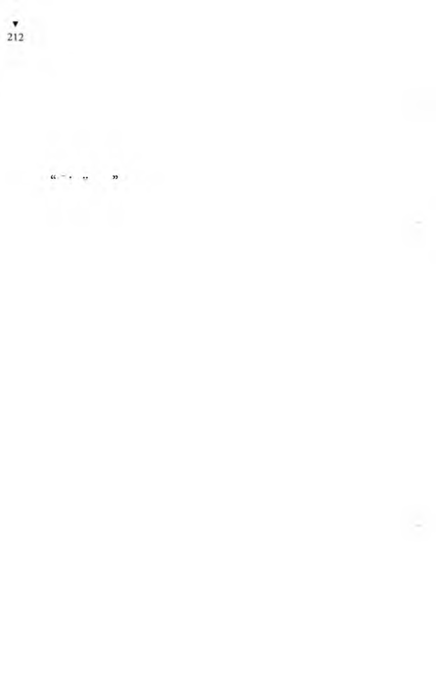
Bıraksam, kaçıp köşke girecek. Ondan sonra sabahacak köşki'm
kapısında dön dur...
“D ur hele, dur!.. Yiyintinin sırası mı? Ben sonra sana sandüviç
alırım, hem de tost yaptırırım... D ur kız... Alırım dedim. Erkek
sözü, alırım! Üstüne de sana bir gazoz ısmarlarım. Bir de çikleı
alırım, çiğnersin ne güzel...”
Dit ote...
“Ötesi berisi kaldı mı hey imansız...”
Yaşar, kendi anlattıklarından içlenip susmuştu. O güzel anıla
rina dalmıştı. Bütün gün Heykelci’ye ekmek çiğnediği için ağzı
kurumuş olan Hamurkâr’ın bile, Yaşar’ın anlattıklarını dinledikçe
tükürük bezleri çalışmış, ağzı sulanmıştı.
— Vay taşyürekli Yaşar, demek, kızcağızı kandırdın ha? dedi.
Yaşar,
— Ne kandırması yahu, dedi, nüfuskâğıdım yok ki nikâlı
kıydırayım.
Maltızcı,
— Anlaşılan şeytana uydun... dedi.
Yaşar, bir derin iç geçirdikten sonra,
— Evet, dedi, oldu bikez, şeytana uydum. Ama Allah yüreğimi
biliyor ya, içimde hiçbir kötülük yoktu. Nüfuskâğıdım olsaydı,
ah!
Kral Sami,
— Ulan Yaşar, Karakaplı Nizami Beye gitseydin ya... dedi.
Yaşar, Karakaplı Nizami Beyi bulmuş olmanın sevinci için
deydi. Ama bu sevincini belli etmek istemiyor, arkadaşlarından
gizli tutuyordu.
— Ben o zaman nerden bilirim Karakaplı Nizami Beyin kim
olduğunu... dedi.
Sis düdüğü sesli yaşlı hükümlü,
— Oğlum, sen bu memlekette yaşamıyor musun be! dedi.
Bu kez Heykelci,
- İnsan bu memlekette yaşar da, Karakaplı Nizami Beyi hiç
tanımaz olur mu, dedi, Karakaplf Nizami Bey için yok yoktur,
olmazı olur yapar.
Yaşar, nasıl olsa Karakaplı Nizami Beyi bulmuş olmanın güveni
içinde, konuyu biraz daha derinleştirmek için,
- Yani nasıl? diye sordu.
- Yanisi şu... Her işi kitabına uydurur. Kitabına uydurur ne
demek? Kanununa uydurur demek. Kanunlara da karakaplı kitap
denir ya... Yani herifçioğlu, karakaplı kitaba uydurur, nizamına
göre iş yapar.
Dilekçeci daha da açıkladı:
- İşte buyüzden ona Karakaplı Nizami Bey denir.
Yaşar Yaşamaz, yavaş yavaş işkillenmeye başlamıştı. O, şimdiye
dek, Nizami Bey diye bir adam olduğunu, bu adamın soyadının
da Karakaplı olduğunu sanıyordu. Beyler Koğuşundaki o herifi
de buyüzden Karakaplı Nizami Bey sanmıştı ya... Oysa bunlar,
Yaşar’a daha önce, Karakaplı Nizami Beyin herzaman, heryerde
olduğunu söylememişler miydi? “Hey kafa!” diyordu kendi
kendine. “Ben ne dangalakmışım!” diye geçiriyordu içinden.
Söylemişlerdi kendisine: “Karakaplı Nizami Bey heryerde vardır,
yeter ki sen onun dilinden anla!”
Yaşar Yaşamaz ancak şimdi aymıştı, ama paracıklarını da Beyler
Koğuşundaki o iri herife kaptırmıştı, hem de herif ondan bişey
istemeden, gönüllü olarak kazıklanmıştı.
Maltızcı,
- Sen Karakaplı Nizami Beye başvurmuş olsaydın, o sana
bir değil, beş nüfuskâğıdı birden verirdi. Hem de nereli olmak
istersen, ora doğumlu olurdun... dedi.
İdareci,
- Diploma da verirdi sana... dedi.
Yaşar,
- Ne diploması? diye sordu.
- Ne diploması istersen, ilkokul, ortaokul, lise... Üniversite
diploması bile verir.
Avcı,
- Karakaplı Nizami Bey tek başına bakanlıktan daha çok
diplom a veriyor, dedi, ne yapsın, bakıyor ki, bakanlık işleri
yetiştiremiyor, o da yardım ediyor.
Sis düdüğü sesli eski sabıkalı,
- İsteyene pasaport da verir, dedi, diyelim hüküm et günde